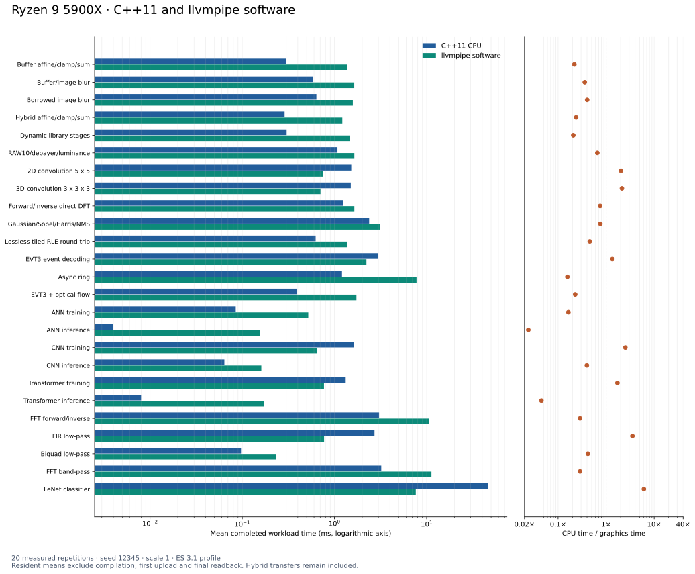
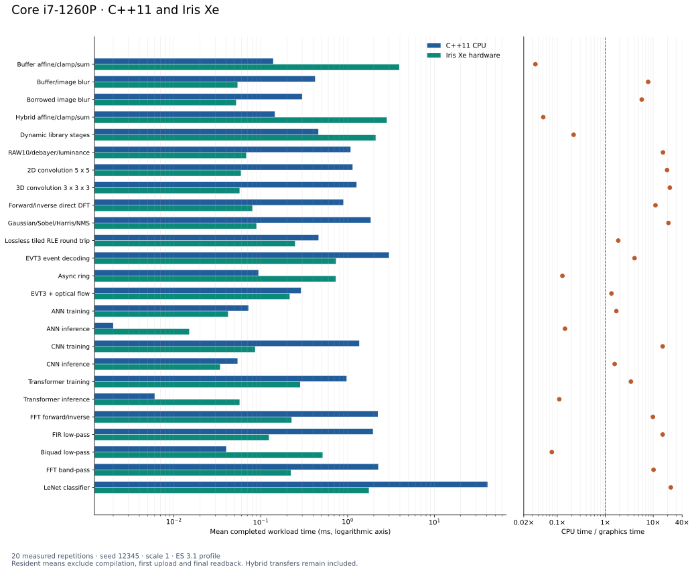
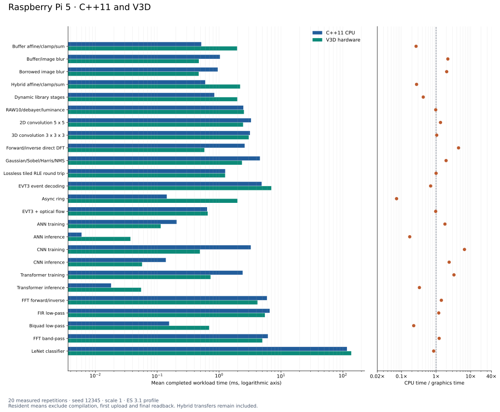
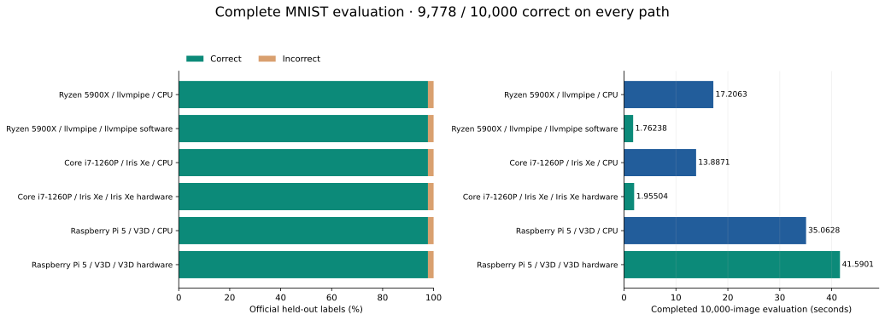
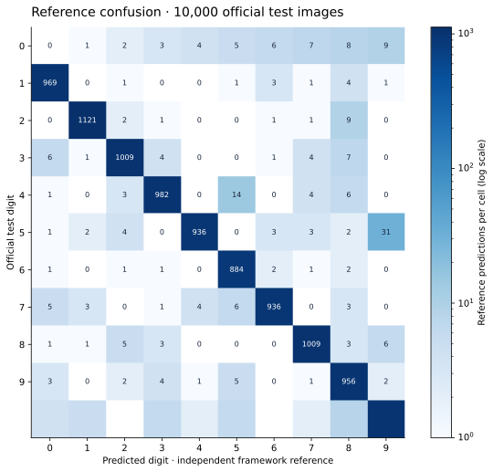
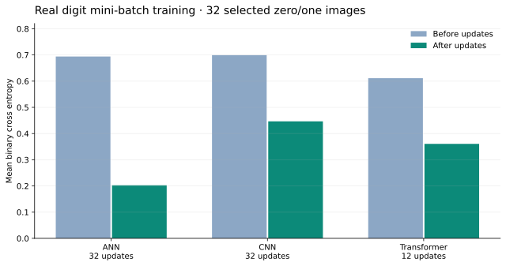
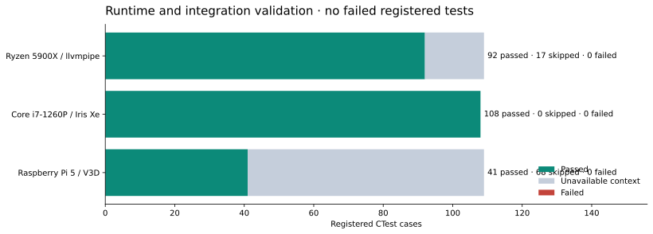
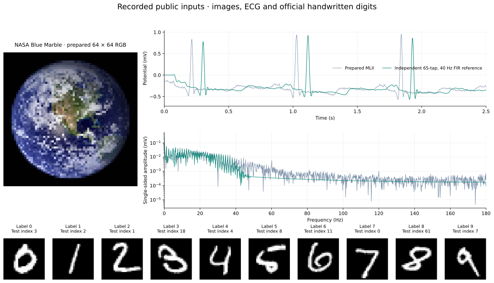

Recorded results · 15 October 2026
Measurements you can inspect
Twenty-five completed pipeline benchmarks, six full held-out digit evaluations, and every registered test outcome. Exact tables, original outputs and downloadable vector figures sit beside the scope of each result.
Resident pipeline performance
Configuration reports: Ryzen and llvmpipe, Core i7 and Iris Xe, and Raspberry Pi 5 and V3D.
These are mean completed workload times from CMake Release builds, C++11, seed 12345, scale 1 and twenty timed repetitions on each execution path. All graphics measurements select the ES 3.1 shader profile. Timing begins after compilation, initial uploads and warmup, and ends before final downloads. Transfers inside mixed CPU/GPU pipelines remain included.
The async row measures a completed batch of 32 dispatches through three reusable slots. A neural training row measures one mini-batch gradient/SGD update, while inference measures the complete forward pipeline. The seven-stage LeNet benchmark uses resident seeded random inputs and parameters. Its trained-model evaluation has a separate timing scope below.
| Pipeline | Workload | Ryzen CPU ms | llvmpipe ms | Core i7 CPU ms | Iris Xe ms | Pi 5 CPU ms | V3D ms |
|---|---|---|---|---|---|---|---|
| Buffer affine/clamp/sum | 16384 floats | 0.300 | 1.374 | 0.139 | 3.928 | 0.516 | 1.956 |
| Buffer/image blur | 128 × 128 | 0.589 | 1.639 | 0.422 | 0.054 | 1.033 | 0.471 |
| Borrowed image blur | 128 × 128 | 0.637 | 1.582 | 0.299 | 0.052 | 0.951 | 0.469 |
| Hybrid affine/clamp/sum | 16384 floats | 0.288 | 1.217 | 0.145 | 2.825 | 0.597 | 2.188 |
| Dynamic library stages | 16384 floats | 0.303 | 1.463 | 0.460 | 2.100 | 0.838 | 1.968 |
| RAW10/debayer/luminance | 128 × 128 | 1.078 | 1.643 | 1.080 | 0.068 | 2.466 | 2.522 |
| 2D convolution 5 x 5 | 128 × 128 vec2 | 1.521 | 0.748 | 1.140 | 0.059 | 3.283 | 2.444 |
| 3D convolution 3 x 3 x 3 | 24 × 24 × 24 | 1.503 | 0.706 | 1.266 | 0.057 | 3.156 | 3.020 |
| Forward/inverse direct DFT | 32 × 32 complex | 1.232 | 1.643 | 0.892 | 0.080 | 2.589 | 0.579 |
| Gaussian/Sobel/Harris/NMS | 128 × 128 | 2.379 | 3.138 | 1.841 | 0.089 | 4.571 | 2.345 |
| Lossless tiled RLE round trip | 65536 uints | 0.625 | 1.367 | 0.462 | 0.248 | 1.256 | 1.253 |
| EVT3 event decoding | 65536 sixteen-bit words | 2.990 | 2.222 | 2.993 | 0.734 | 4.873 | 6.988 |
| Async ring | 32 × 257 floats, 3 slots | 1.207 | 7.759 | 0.094 | 0.730 | 0.143 | 1.976 |
| EVT3 + optical flow | 32 × 24 sampled plane, history 64 | 0.393 | 1.731 | 0.290 | 0.215 | 0.640 | 0.656 |
| ANN training | 32 samples, 33 parameters | 0.085 | 0.520 | 0.072 | 0.042 | 0.206 | 0.114 |
| ANN inference | 32 samples, 33 parameters | 0.004 | 0.156 | 0.002 | 0.015 | 0.006 | 0.037 |
| CNN training | 32 samples, 23 parameters | 1.615 | 0.644 | 1.359 | 0.086 | 3.254 | 0.490 |
| CNN inference | 32 samples, 23 parameters | 0.064 | 0.161 | 0.054 | 0.034 | 0.138 | 0.057 |
| Transformer training | 8 sequences, 4 tokens × 4, 134 parameters | 1.324 | 0.770 | 0.972 | 0.284 | 2.404 | 0.729 |
| Transformer inference | 8 sequences, 4 tokens × 4, 134 parameters | 0.008 | 0.171 | 0.006 | 0.057 | 0.018 | 0.055 |
| FFT forward/inverse | 8 × 1024 complex | 3.050 | 10.656 | 2.226 | 0.226 | 5.936 | 4.174 |
| FIR low-pass | 8 × 2048 floats, 65 taps | 2.718 | 0.772 | 1.956 | 0.124 | 6.570 | 5.499 |
| Biquad low-pass | 8 × 2048 floats, persistent state | 0.097 | 0.233 | 0.040 | 0.515 | 0.156 | 0.691 |
| FFT band-pass | 8 × 1024 complex, 4-10 kHz | 3.219 | 11.268 | 2.250 | 0.222 | 6.153 | 5.001 |
| LeNet classifier | 32 × 28 × 28, 61,706 parameters | 46.521 | 7.622 | 40.790 | 1.756 | 116.491 | 136.617 |
Ryzen 5900X / llvmpipe


Exact timing and ratio table · Ryzen 5900X / llvmpipe
| Pipeline | Workload | CPU ms | Graphics ms | CPU / graphics |
|---|---|---|---|---|
| Buffer affine/clamp/sum | 16384 floats | 0.300 | 1.374 | 0.218 |
| Buffer/image blur | 128 x 128 | 0.589 | 1.639 | 0.359 |
| Borrowed image blur | 128 x 128 | 0.637 | 1.582 | 0.403 |
| Hybrid affine/clamp/sum | 16384 floats | 0.288 | 1.217 | 0.237 |
| Dynamic library stages | 16384 floats | 0.303 | 1.463 | 0.207 |
| RAW10/debayer/luminance | 128 x 128 | 1.078 | 1.643 | 0.656 |
| 2D convolution 5 x 5 | 128 x 128 vec2 | 1.521 | 0.748 | 2.034 |
| 3D convolution 3 x 3 x 3 | 24 x 24 x 24 | 1.503 | 0.706 | 2.129 |
| Forward/inverse direct DFT | 32 x 32 complex | 1.232 | 1.643 | 0.750 |
| Gaussian/Sobel/Harris/NMS | 128 x 128 | 2.379 | 3.138 | 0.758 |
| Lossless tiled RLE round trip | 65536 uints | 0.625 | 1.367 | 0.457 |
| EVT3 event decoding | 65536 sixteen-bit words | 2.990 | 2.222 | 1.346 |
| Async ring | 32 x 257 floats, 3 slots | 1.207 | 7.759 | 0.156 |
| EVT3 + optical flow | 32 x 24 sampled plane, history 64 | 0.393 | 1.731 | 0.227 |
| ANN training | 32 samples, 33 parameters | 0.085 | 0.520 | 0.164 |
| ANN inference | 32 samples, 33 parameters | 0.004 | 0.156 | 0.024 |
| CNN training | 32 samples, 23 parameters | 1.615 | 0.644 | 2.510 |
| CNN inference | 32 samples, 23 parameters | 0.064 | 0.161 | 0.397 |
| Transformer training | 8 sequences, 4 tokens x 4, 134 parameters | 1.324 | 0.770 | 1.719 |
| Transformer inference | 8 sequences, 4 tokens x 4, 134 parameters | 0.008 | 0.171 | 0.045 |
| FFT forward/inverse | 8 x 1024 complex | 3.050 | 10.656 | 0.286 |
| FIR low-pass | 8 x 2048 floats, 65 taps | 2.718 | 0.772 | 3.523 |
| Biquad low-pass | 8 x 2048 floats, persistent state | 0.097 | 0.233 | 0.417 |
| FFT band-pass | 8 x 1024 complex, 4-10 kHz | 3.219 | 11.268 | 0.286 |
| LeNet classifier | 32 x 28 x 28, 61,706 parameters | 46.521 | 7.622 | 6.104 |
Complete benchmark output · Ryzen 5900X / llvmpipe
This is the recorded benchmark output. Its EVT3 wording “packed words” counts 16-bit sensor words before two words are packed into each uint.
Seed: 12345, iterations: 20, scale: 1. GPU renderer: llvmpipe (LLVM 20.1.2, 256 bits). Lossless RLE: 13556 payload words + 257 offset words, 4.74x size reduction. EVT3 compact output: 223772 events from 65536 words, five stages include state reset. Optical flow input: 610 seeded samples on a known temporal plane, six linked stages. Neural training timings measure one mini-batch gradient/SGD update, inference measures the complete forward pipeline. Steady-state resident timings, compilation, first uploads and final readback excluded. Hybrid timings include transfers between CPU and GPU stages. | Pipeline | Workload | CPU ms | GPU ms | CPU/GPU | | --- | --- | ---: | ---: | ---: | | Buffer affine/clamp/sum | 16384 floats | 0.300 | 1.374 | 0.218 | | Buffer/image blur | 128 x 128 | 0.589 | 1.639 | 0.359 | | Borrowed image blur | 128 x 128 | 0.637 | 1.582 | 0.403 | | Hybrid affine/clamp/sum | 16384 floats | 0.288 | 1.217 | 0.237 | | Dynamic library stages | 16384 floats | 0.303 | 1.463 | 0.207 | | RAW10/debayer/luminance | 128 x 128 | 1.078 | 1.643 | 0.656 | | 2D convolution 5 x 5 | 128 x 128 vec2 | 1.521 | 0.748 | 2.034 | | 3D convolution 3 x 3 x 3 | 24 x 24 x 24 | 1.503 | 0.706 | 2.129 | | Forward/inverse direct DFT | 32 x 32 complex | 1.232 | 1.643 | 0.750 | | Gaussian/Sobel/Harris/NMS | 128 x 128 | 2.379 | 3.138 | 0.758 | | Lossless tiled RLE round trip | 65536 uints | 0.625 | 1.367 | 0.457 | | EVT3 event decoding | 65536 packed words | 2.990 | 2.222 | 1.346 | | Async ring | 32 x 257 floats, 3 slots | 1.207 | 7.759 | 0.156 | | EVT3 + optical flow | 32 x 24 sampled plane, history 64 | 0.393 | 1.731 | 0.227 | | ANN training | 32 samples, 33 parameters | 0.085 | 0.520 | 0.164 | | ANN inference | 32 samples, 33 parameters | 0.004 | 0.156 | 0.024 | | CNN training | 32 samples, 23 parameters | 1.615 | 0.644 | 2.510 | | CNN inference | 32 samples, 23 parameters | 0.064 | 0.161 | 0.397 | | Transformer training | 8 sequences, 4 tokens x 4, 134 parameters | 1.324 | 0.770 | 1.719 | | Transformer inference | 8 sequences, 4 tokens x 4, 134 parameters | 0.008 | 0.171 | 0.045 | | FFT forward/inverse | 8 x 1024 complex | 3.050 | 10.656 | 0.286 | | FIR low-pass | 8 x 2048 floats, 65 taps | 2.718 | 0.772 | 3.523 | | Biquad low-pass | 8 x 2048 floats, persistent state | 0.097 | 0.233 | 0.417 | | FFT band-pass | 8 x 1024 complex, 4-10 kHz | 3.219 | 11.268 | 0.286 | | LeNet classifier | 32 x 28 x 28, 61,706 parameters | 46.521 | 7.622 | 6.104 |
Core i7-1260P / Iris Xe


Exact timing and ratio table · Core i7-1260P / Iris Xe
| Pipeline | Workload | CPU ms | Graphics ms | CPU / graphics |
|---|---|---|---|---|
| Buffer affine/clamp/sum | 16384 floats | 0.139 | 3.928 | 0.035 |
| Buffer/image blur | 128 x 128 | 0.422 | 0.054 | 7.838 |
| Borrowed image blur | 128 x 128 | 0.299 | 0.052 | 5.764 |
| Hybrid affine/clamp/sum | 16384 floats | 0.145 | 2.825 | 0.051 |
| Dynamic library stages | 16384 floats | 0.460 | 2.100 | 0.219 |
| RAW10/debayer/luminance | 128 x 128 | 1.080 | 0.068 | 15.982 |
| 2D convolution 5 x 5 | 128 x 128 vec2 | 1.140 | 0.059 | 19.428 |
| 3D convolution 3 x 3 x 3 | 24 x 24 x 24 | 1.266 | 0.057 | 22.166 |
| Forward/inverse direct DFT | 32 x 32 complex | 0.892 | 0.080 | 11.134 |
| Gaussian/Sobel/Harris/NMS | 128 x 128 | 1.841 | 0.089 | 20.761 |
| Lossless tiled RLE round trip | 65536 uints | 0.462 | 0.248 | 1.864 |
| EVT3 event decoding | 65536 sixteen-bit words | 2.993 | 0.734 | 4.079 |
| Async ring | 32 x 257 floats, 3 slots | 0.094 | 0.730 | 0.128 |
| EVT3 + optical flow | 32 x 24 sampled plane, history 64 | 0.290 | 0.215 | 1.347 |
| ANN training | 32 samples, 33 parameters | 0.072 | 0.042 | 1.702 |
| ANN inference | 32 samples, 33 parameters | 0.002 | 0.015 | 0.145 |
| CNN training | 32 samples, 23 parameters | 1.359 | 0.086 | 15.741 |
| CNN inference | 32 samples, 23 parameters | 0.054 | 0.034 | 1.570 |
| Transformer training | 8 sequences, 4 tokens x 4, 134 parameters | 0.972 | 0.284 | 3.427 |
| Transformer inference | 8 sequences, 4 tokens x 4, 134 parameters | 0.006 | 0.057 | 0.110 |
| FFT forward/inverse | 8 x 1024 complex | 2.226 | 0.226 | 9.856 |
| FIR low-pass | 8 x 2048 floats, 65 taps | 1.956 | 0.124 | 15.724 |
| Biquad low-pass | 8 x 2048 floats, persistent state | 0.040 | 0.515 | 0.077 |
| FFT band-pass | 8 x 1024 complex, 4-10 kHz | 2.250 | 0.222 | 10.150 |
| LeNet classifier | 32 x 28 x 28, 61,706 parameters | 40.790 | 1.756 | 23.229 |
Complete benchmark output · Core i7-1260P / Iris Xe
This is the recorded benchmark output. Its EVT3 wording “packed words” counts 16-bit sensor words before two words are packed into each uint.
Seed: 12345, iterations: 20, scale: 1. GPU renderer: Mesa Intel(R) Iris(R) Xe Graphics (ADL GT2). Lossless RLE: 13556 payload words + 257 offset words, 4.74x size reduction. EVT3 compact output: 223772 events from 65536 words, five stages include state reset. Optical flow input: 610 seeded samples on a known temporal plane, six linked stages. Neural training timings measure one mini-batch gradient/SGD update, inference measures the complete forward pipeline. Steady-state resident timings, compilation, first uploads and final readback excluded. Hybrid timings include transfers between CPU and GPU stages. | Pipeline | Workload | CPU ms | GPU ms | CPU/GPU | | --- | --- | ---: | ---: | ---: | | Buffer affine/clamp/sum | 16384 floats | 0.139 | 3.928 | 0.035 | | Buffer/image blur | 128 x 128 | 0.422 | 0.054 | 7.838 | | Borrowed image blur | 128 x 128 | 0.299 | 0.052 | 5.764 | | Hybrid affine/clamp/sum | 16384 floats | 0.145 | 2.825 | 0.051 | | Dynamic library stages | 16384 floats | 0.460 | 2.100 | 0.219 | | RAW10/debayer/luminance | 128 x 128 | 1.080 | 0.068 | 15.982 | | 2D convolution 5 x 5 | 128 x 128 vec2 | 1.140 | 0.059 | 19.428 | | 3D convolution 3 x 3 x 3 | 24 x 24 x 24 | 1.266 | 0.057 | 22.166 | | Forward/inverse direct DFT | 32 x 32 complex | 0.892 | 0.080 | 11.134 | | Gaussian/Sobel/Harris/NMS | 128 x 128 | 1.841 | 0.089 | 20.761 | | Lossless tiled RLE round trip | 65536 uints | 0.462 | 0.248 | 1.864 | | EVT3 event decoding | 65536 packed words | 2.993 | 0.734 | 4.079 | | Async ring | 32 x 257 floats, 3 slots | 0.094 | 0.730 | 0.128 | | EVT3 + optical flow | 32 x 24 sampled plane, history 64 | 0.290 | 0.215 | 1.347 | | ANN training | 32 samples, 33 parameters | 0.072 | 0.042 | 1.702 | | ANN inference | 32 samples, 33 parameters | 0.002 | 0.015 | 0.145 | | CNN training | 32 samples, 23 parameters | 1.359 | 0.086 | 15.741 | | CNN inference | 32 samples, 23 parameters | 0.054 | 0.034 | 1.570 | | Transformer training | 8 sequences, 4 tokens x 4, 134 parameters | 0.972 | 0.284 | 3.427 | | Transformer inference | 8 sequences, 4 tokens x 4, 134 parameters | 0.006 | 0.057 | 0.110 | | FFT forward/inverse | 8 x 1024 complex | 2.226 | 0.226 | 9.856 | | FIR low-pass | 8 x 2048 floats, 65 taps | 1.956 | 0.124 | 15.724 | | Biquad low-pass | 8 x 2048 floats, persistent state | 0.040 | 0.515 | 0.077 | | FFT band-pass | 8 x 1024 complex, 4-10 kHz | 2.250 | 0.222 | 10.150 | | LeNet classifier | 32 x 28 x 28, 61,706 parameters | 40.790 | 1.756 | 23.229 |
Raspberry Pi 5 / V3D


Exact timing and ratio table · Raspberry Pi 5 / V3D
| Pipeline | Workload | CPU ms | Graphics ms | CPU / graphics |
|---|---|---|---|---|
| Buffer affine/clamp/sum | 16384 floats | 0.516 | 1.956 | 0.264 |
| Buffer/image blur | 128 x 128 | 1.033 | 0.471 | 2.192 |
| Borrowed image blur | 128 x 128 | 0.951 | 0.469 | 2.029 |
| Hybrid affine/clamp/sum | 16384 floats | 0.597 | 2.188 | 0.273 |
| Dynamic library stages | 16384 floats | 0.838 | 1.968 | 0.426 |
| RAW10/debayer/luminance | 128 x 128 | 2.466 | 2.522 | 0.978 |
| 2D convolution 5 x 5 | 128 x 128 vec2 | 3.283 | 2.444 | 1.343 |
| 3D convolution 3 x 3 x 3 | 24 x 24 x 24 | 3.156 | 3.020 | 1.045 |
| Forward/inverse direct DFT | 32 x 32 complex | 2.589 | 0.579 | 4.472 |
| Gaussian/Sobel/Harris/NMS | 128 x 128 | 4.571 | 2.345 | 1.949 |
| Lossless tiled RLE round trip | 65536 uints | 1.256 | 1.253 | 1.002 |
| EVT3 event decoding | 65536 sixteen-bit words | 4.873 | 6.988 | 0.697 |
| Async ring | 32 x 257 floats, 3 slots | 0.143 | 1.976 | 0.072 |
| EVT3 + optical flow | 32 x 24 sampled plane, history 64 | 0.640 | 0.656 | 0.976 |
| ANN training | 32 samples, 33 parameters | 0.206 | 0.114 | 1.804 |
| ANN inference | 32 samples, 33 parameters | 0.006 | 0.037 | 0.173 |
| CNN training | 32 samples, 23 parameters | 3.254 | 0.490 | 6.636 |
| CNN inference | 32 samples, 23 parameters | 0.138 | 0.057 | 2.393 |
| Transformer training | 8 sequences, 4 tokens x 4, 134 parameters | 2.404 | 0.729 | 3.296 |
| Transformer inference | 8 sequences, 4 tokens x 4, 134 parameters | 0.018 | 0.055 | 0.330 |
| FFT forward/inverse | 8 x 1024 complex | 5.936 | 4.174 | 1.422 |
| FIR low-pass | 8 x 2048 floats, 65 taps | 6.570 | 5.499 | 1.195 |
| Biquad low-pass | 8 x 2048 floats, persistent state | 0.156 | 0.691 | 0.226 |
| FFT band-pass | 8 x 1024 complex, 4-10 kHz | 6.153 | 5.001 | 1.230 |
| LeNet classifier | 32 x 28 x 28, 61,706 parameters | 116.491 | 136.617 | 0.853 |
Complete benchmark output · Raspberry Pi 5 / V3D
This is the recorded benchmark output. Its EVT3 wording “packed words” counts 16-bit sensor words before two words are packed into each uint.
Seed: 12345, iterations: 20, scale: 1. GPU renderer: V3D 7.1.7.0. Lossless RLE: 13556 payload words + 257 offset words, 4.74x size reduction. EVT3 compact output: 223772 events from 65536 words, five stages include state reset. Optical flow input: 610 seeded samples on a known temporal plane, six linked stages. Neural training timings measure one mini-batch gradient/SGD update, inference measures the complete forward pipeline. Steady-state resident timings, compilation, first uploads and final readback excluded. Hybrid timings include transfers between CPU and GPU stages. | Pipeline | Workload | CPU ms | GPU ms | CPU/GPU | | --- | --- | ---: | ---: | ---: | | Buffer affine/clamp/sum | 16384 floats | 0.516 | 1.956 | 0.264 | | Buffer/image blur | 128 x 128 | 1.033 | 0.471 | 2.192 | | Borrowed image blur | 128 x 128 | 0.951 | 0.469 | 2.029 | | Hybrid affine/clamp/sum | 16384 floats | 0.597 | 2.188 | 0.273 | | Dynamic library stages | 16384 floats | 0.838 | 1.968 | 0.426 | | RAW10/debayer/luminance | 128 x 128 | 2.466 | 2.522 | 0.978 | | 2D convolution 5 x 5 | 128 x 128 vec2 | 3.283 | 2.444 | 1.343 | | 3D convolution 3 x 3 x 3 | 24 x 24 x 24 | 3.156 | 3.020 | 1.045 | | Forward/inverse direct DFT | 32 x 32 complex | 2.589 | 0.579 | 4.472 | | Gaussian/Sobel/Harris/NMS | 128 x 128 | 4.571 | 2.345 | 1.949 | | Lossless tiled RLE round trip | 65536 uints | 1.256 | 1.253 | 1.002 | | EVT3 event decoding | 65536 packed words | 4.873 | 6.988 | 0.697 | | Async ring | 32 x 257 floats, 3 slots | 0.143 | 1.976 | 0.072 | | EVT3 + optical flow | 32 x 24 sampled plane, history 64 | 0.640 | 0.656 | 0.976 | | ANN training | 32 samples, 33 parameters | 0.206 | 0.114 | 1.804 | | ANN inference | 32 samples, 33 parameters | 0.006 | 0.037 | 0.173 | | CNN training | 32 samples, 23 parameters | 3.254 | 0.490 | 6.636 | | CNN inference | 32 samples, 23 parameters | 0.138 | 0.057 | 2.393 | | Transformer training | 8 sequences, 4 tokens x 4, 134 parameters | 2.404 | 0.729 | 3.296 | | Transformer inference | 8 sequences, 4 tokens x 4, 134 parameters | 0.018 | 0.055 | 0.330 | | FFT forward/inverse | 8 x 1024 complex | 5.936 | 4.174 | 1.422 | | FIR low-pass | 8 x 2048 floats, 65 taps | 6.570 | 5.499 | 1.195 | | Biquad low-pass | 8 x 2048 floats, persistent state | 0.156 | 0.691 | 0.226 | | FFT band-pass | 8 x 1024 complex, 4-10 kHz | 6.153 | 5.001 | 1.230 | | LeNet classifier | 32 x 28 x 28, 61,706 parameters | 116.491 | 136.617 | 0.853 |
The EVT3 decoder emits 223772 ordered events from 65536 sensor words. Five stages include resetting decoder state. Normal flow uses 610 seeded samples from a 32×24 temporal plane and history 64. The RLE payload has 13556 words plus 257 offset words, a 4.74-fold reduction for this input. The encoder still reserves worst-case capacity. Prefix and reduction stages can dominate small graphics workloads.
The timing plots show the archived mean values at their recorded precision. Differences across machines include CPU, operating system, driver and renderer effects.
# Reproduce the resident measurement settings.
SHDR_BENCH_ITERATIONS=20 SHDR_BENCH_SCALE=1 ./build/example_benchmark --gpu es31Complete held-out digit evaluation
The modern LeNet-style classifier produced 9778 correct predictions from all 10,000 official MNIST test images, or 97.78%, on every recorded CPU and graphics path. Every one of the 100,000 output logits was compared with the shipped independent framework reference.
The seven-stage model has 61,706 parameters, full second-convolution connectivity, ReLU, fixed average pooling and a linear ten-class head. It is a documented modern LeNet-5 adaptation. Native deployment uses plain float weights and the shdr C++/OpenGL runtime. The neural guide describes the architecture and parameter layout.
| Configuration | Execution path | Correct | Images | Accuracy % | Completed seconds | Maximum normalized logit error |
|---|---|---|---|---|---|---|
| Ryzen 5900X / llvmpipe | CPU | 9778 | 10000 | 97.78 | 17.2063 | 4.57699e-06 |
| Ryzen 5900X / llvmpipe | llvmpipe software | 9778 | 10000 | 97.78 | 1.76238 | 4.57699e-06 |
| Core i7-1260P / Iris Xe | CPU | 9778 | 10000 | 97.78 | 13.8871 | 4.57699e-06 |
| Core i7-1260P / Iris Xe | Iris Xe hardware | 9778 | 10000 | 97.78 | 1.95504 | 4.00418e-06 |
| Raspberry Pi 5 / V3D | CPU | 9778 | 10000 | 97.78 | 35.0628 | 4.00418e-06 |
| Raspberry Pi 5 / V3D | V3D hardware | 9778 | 10000 | 97.78 | 41.5901 | 4.57699e-06 |


Normalized logit error is abs(actual-reference)/(1+abs(reference)), maximized over all 100,000 scores. The model was prepared on the separate 60,000-image training split for three complete epochs with Adam, learning rate 0.001, batch size 128 and seed 12345. Independent framework evaluation also recorded 97.78%. The data guide records public input provenance and preprocessing.
# Prepare all official test images explicitly before a complete evaluation.
python3 scripts/prepare_datasets.py --full-mnist
# Evaluate every held-out digit on the selected native backend.
SHDR_FULL_MNIST_DIR=build/datasets ./build/example_real_data --gpu es31Reference confusion counts
This matrix counts the independent framework predictions from the shipped reference logits and all original test labels. The native evaluations above record total accuracy and the maximum normalized error across all 100,000 logits.


Exact reference confusion table · 10000 official test images
| True digit / predicted | 0 | 1 | 2 | 3 | 4 | 5 | 6 | 7 | 8 | 9 |
|---|---|---|---|---|---|---|---|---|---|---|
| 0 | 969 | 0 | 1 | 0 | 0 | 1 | 3 | 1 | 4 | 1 |
| 1 | 0 | 1121 | 2 | 1 | 0 | 0 | 1 | 1 | 9 | 0 |
| 2 | 6 | 1 | 1009 | 4 | 0 | 0 | 1 | 4 | 7 | 0 |
| 3 | 1 | 0 | 3 | 982 | 0 | 14 | 0 | 4 | 6 | 0 |
| 4 | 1 | 2 | 4 | 0 | 936 | 0 | 3 | 3 | 2 | 31 |
| 5 | 1 | 0 | 1 | 1 | 0 | 884 | 2 | 1 | 2 | 0 |
| 6 | 5 | 3 | 0 | 1 | 4 | 6 | 936 | 0 | 3 | 0 |
| 7 | 1 | 1 | 5 | 3 | 0 | 0 | 0 | 1009 | 3 | 6 |
| 8 | 3 | 0 | 2 | 4 | 1 | 5 | 0 | 1 | 956 | 2 |
| 9 | 4 | 5 | 0 | 6 | 2 | 6 | 0 | 2 | 8 | 976 |
Small-model training on real zero/one images
The ANN, CNN and transformer examples fit one balanced 32-image mini-batch from the official training split. They use the original binary digit labels with documented feature transformations. The numbers below are training loss before and after the recorded updates. These measurements describe optimization on the training images. The LeNet evaluation above reports held-out classification quality. All six complete evaluation logs print the same values at the recorded precision.
| Model | SGD updates | Initial mean binary cross entropy | Final mean binary cross entropy |
|---|---|---|---|
| ANN | 32 | 0.694159 | 0.20248 |
| CNN | 32 | 0.699285 | 0.446509 |
| Transformer | 12 | 0.61123 | 0.360663 |


Complete real-data functional outputs
Each run includes linked and mixed resources, asynchronous submission, dynamic libraries, image storage, all Bayer packing/phase combinations, corners, direct DFT and reconstruction, 3D convolution, FFT and windows, five FIR modes, four biquad modes, exact EVT3 decoding and normal flow, small-model training, and the full deeper classifier. Satellite corners, event flow and ECG processing use numerical reference checks and backend comparisons in these fixtures.
Complete public-data evaluation log · Ryzen 5900X / llvmpipe / CPU
NASA linked affine/clamp/reduction: verified, normalized CPU/GPU error 0 NASA mixed CPU/GPU resources: verified, normalized CPU/GPU error 0 NASA asynchronous resource submission: verified NASA dynamically loaded shader pipeline: verified, normalized CPU/GPU error 0 NASA buffer/image/box-filter pipeline: verified, normalized CPU/GPU error 0 NASA Gaussian/Sobel/Harris/nonmaximum suppression: verified, normalized CPU/GPU error 0 NASA selected Harris peaks: 61 NASA 2D convolution/DFT/inverse: verified, normalized CPU/GPU error 0 MNIST image-stack 3D convolution: verified, normalized CPU/GPU error 0 NASA derived Bayer packing 0 phase 0: verified, normalized CPU/GPU error 0 NASA derived Bayer packing 0 phase 1: verified, normalized CPU/GPU error 0 NASA derived Bayer packing 0 phase 2: verified, normalized CPU/GPU error 0 NASA derived Bayer packing 0 phase 3: verified, normalized CPU/GPU error 0 NASA derived Bayer packing 1 phase 0: verified, normalized CPU/GPU error 0 NASA derived Bayer packing 1 phase 1: verified, normalized CPU/GPU error 0 NASA derived Bayer packing 1 phase 2: verified, normalized CPU/GPU error 0 NASA derived Bayer packing 1 phase 3: verified, normalized CPU/GPU error 0 NASA derived Bayer packing 2 phase 0: verified, normalized CPU/GPU error 0 NASA derived Bayer packing 2 phase 1: verified, normalized CPU/GPU error 0 NASA derived Bayer packing 2 phase 2: verified, normalized CPU/GPU error 0 NASA derived Bayer packing 2 phase 3: verified, normalized CPU/GPU error 0 NASA derived Bayer packing 3 phase 0: verified, normalized CPU/GPU error 0 NASA derived Bayer packing 3 phase 1: verified, normalized CPU/GPU error 0 NASA derived Bayer packing 3 phase 2: verified, normalized CPU/GPU error 0 NASA derived Bayer packing 3 phase 3: verified, normalized CPU/GPU error 0 NASA tiled lossless RLE image roundtrip: verified, normalized CPU/GPU error 0 NASA RLE encoded words: 15996 from 12288 input words PhysioNet ECG 1D FFT/inverse: verified, normalized CPU/GPU error 0 PhysioNet ECG FFT filter 0: verified, normalized CPU/GPU error 0 PhysioNet ECG FFT filter 1: verified, normalized CPU/GPU error 0 PhysioNet ECG FFT filter 2: verified, normalized CPU/GPU error 0 PhysioNet ECG FFT filter 3: verified, normalized CPU/GPU error 0 PhysioNet ECG spectral window 0: verified, normalized CPU/GPU error 0 PhysioNet ECG spectral window 1: verified, normalized CPU/GPU error 0 PhysioNet ECG spectral window 2: verified, normalized CPU/GPU error 0 PhysioNet ECG spectral window 3: verified, normalized CPU/GPU error 0 PhysioNet ECG FIR filter 0: verified, normalized CPU/GPU error 0 PhysioNet ECG FIR filter 1: verified, normalized CPU/GPU error 0 PhysioNet ECG FIR filter 2: verified, normalized CPU/GPU error 0 PhysioNet ECG FIR filter 3: verified, normalized CPU/GPU error 0 PhysioNet ECG FIR filter 4: verified, normalized CPU/GPU error 0 PhysioNet ECG biquad filter 0: verified, normalized CPU/GPU error 0 PhysioNet ECG biquad filter 1: verified, normalized CPU/GPU error 0 PhysioNet ECG biquad filter 2: verified, normalized CPU/GPU error 0 PhysioNet ECG biquad filter 3: verified, normalized CPU/GPU error 0 Prophesee real EVT3 decode/normal-flow pipeline: verified, normalized CPU/GPU error 0 Prophesee recording: 21950 decoded events, 21950 compact CD words, 500 accepted normal-flow fits MNIST two-feature ANN training/inference: verified, normalized CPU/GPU error 0 MNIST two-feature ANN mini-batch loss: 0.694159 -> 0.20248 MNIST compact CNN training/inference: verified, normalized CPU/GPU error 0 MNIST compact CNN mini-batch loss: 0.699285 -> 0.446509 MNIST patch-token transformer training/inference: verified, normalized CPU/GPU error 0 MNIST patch-token transformer mini-batch loss: 0.61123 -> 0.360663 LeNet-style classifier: all seven layers and 61706 parameters verified against a double oracle LeNet MNIST held-out: 9778/10000 correct, accuracy 97.78%, normalized reference error 4.57699e-06, completed seconds 17.2063 All public real-data functional cases passed
Complete public-data evaluation log · Ryzen 5900X / llvmpipe / ES 3.1 graphics
NASA linked affine/clamp/reduction: verified, normalized CPU/GPU error 0 NASA mixed CPU/GPU resources: verified, normalized CPU/GPU error 0 NASA asynchronous resource submission: verified NASA dynamically loaded shader pipeline: verified, normalized CPU/GPU error 0 NASA buffer/image/box-filter pipeline: verified, normalized CPU/GPU error 0 NASA Gaussian/Sobel/Harris/nonmaximum suppression: verified, normalized CPU/GPU error 0 NASA selected Harris peaks: 61 NASA 2D convolution/DFT/inverse: verified, normalized CPU/GPU error 9.86406e-07 MNIST image-stack 3D convolution: verified, normalized CPU/GPU error 0 NASA derived Bayer packing 0 phase 0: verified, normalized CPU/GPU error 6.86873e-08 NASA derived Bayer packing 0 phase 1: verified, normalized CPU/GPU error 4.38723e-08 NASA derived Bayer packing 0 phase 2: verified, normalized CPU/GPU error 4.4295e-08 NASA derived Bayer packing 0 phase 3: verified, normalized CPU/GPU error 4.36838e-08 NASA derived Bayer packing 1 phase 0: verified, normalized CPU/GPU error 6.86873e-08 NASA derived Bayer packing 1 phase 1: verified, normalized CPU/GPU error 4.38723e-08 NASA derived Bayer packing 1 phase 2: verified, normalized CPU/GPU error 4.4295e-08 NASA derived Bayer packing 1 phase 3: verified, normalized CPU/GPU error 4.36838e-08 NASA derived Bayer packing 2 phase 0: verified, normalized CPU/GPU error 3.99307e-08 NASA derived Bayer packing 2 phase 1: verified, normalized CPU/GPU error 4.23175e-08 NASA derived Bayer packing 2 phase 2: verified, normalized CPU/GPU error 6.92246e-08 NASA derived Bayer packing 2 phase 3: verified, normalized CPU/GPU error 4.29885e-08 NASA derived Bayer packing 3 phase 0: verified, normalized CPU/GPU error 4.28234e-08 NASA derived Bayer packing 3 phase 1: verified, normalized CPU/GPU error 4.13282e-08 NASA derived Bayer packing 3 phase 2: verified, normalized CPU/GPU error 7.13851e-08 NASA derived Bayer packing 3 phase 3: verified, normalized CPU/GPU error 4.44882e-08 NASA tiled lossless RLE image roundtrip: verified, normalized CPU/GPU error 0 NASA RLE encoded words: 15996 from 12288 input words PhysioNet ECG 1D FFT/inverse: verified, normalized CPU/GPU error 0 PhysioNet ECG FFT filter 0: verified, normalized CPU/GPU error 2.3254e-08 PhysioNet ECG FFT filter 1: verified, normalized CPU/GPU error 3.29144e-08 PhysioNet ECG FFT filter 2: verified, normalized CPU/GPU error 3.84523e-08 PhysioNet ECG FFT filter 3: verified, normalized CPU/GPU error 4.5632e-08 PhysioNet ECG spectral window 0: verified, normalized CPU/GPU error 0 PhysioNet ECG spectral window 1: verified, normalized CPU/GPU error 3.69377e-06 PhysioNet ECG spectral window 2: verified, normalized CPU/GPU error 3.20483e-06 PhysioNet ECG spectral window 3: verified, normalized CPU/GPU error 4.3956e-06 PhysioNet ECG FIR filter 0: verified, normalized CPU/GPU error 0 PhysioNet ECG FIR filter 1: verified, normalized CPU/GPU error 0 PhysioNet ECG FIR filter 2: verified, normalized CPU/GPU error 0 PhysioNet ECG FIR filter 3: verified, normalized CPU/GPU error 0 PhysioNet ECG FIR filter 4: verified, normalized CPU/GPU error 0 PhysioNet ECG biquad filter 0: verified, normalized CPU/GPU error 1.18087e-07 PhysioNet ECG biquad filter 1: verified, normalized CPU/GPU error 1.16945e-07 PhysioNet ECG biquad filter 2: verified, normalized CPU/GPU error 0 PhysioNet ECG biquad filter 3: verified, normalized CPU/GPU error 4.75941e-08 Prophesee real EVT3 decode/normal-flow pipeline: verified, normalized CPU/GPU error 0 Prophesee recording: 21950 decoded events, 21950 compact CD words, 500 accepted normal-flow fits MNIST two-feature ANN training/inference: verified, normalized CPU/GPU error 1.59604e-07 MNIST two-feature ANN mini-batch loss: 0.694159 -> 0.20248 MNIST compact CNN training/inference: verified, normalized CPU/GPU error 1.43349e-07 MNIST compact CNN mini-batch loss: 0.699285 -> 0.446509 MNIST patch-token transformer training/inference: verified, normalized CPU/GPU error 9.37875e-08 MNIST patch-token transformer mini-batch loss: 0.61123 -> 0.360663 LeNet-style classifier: all seven layers and 61706 parameters verified against a double oracle LeNet MNIST held-out: 9778/10000 correct, accuracy 97.78%, normalized reference error 4.57699e-06, completed seconds 1.76238 All public real-data functional cases passed
Complete public-data evaluation log · Core i7-1260P / Iris Xe / CPU
NASA linked affine/clamp/reduction: verified, normalized CPU/GPU error 0 NASA mixed CPU/GPU resources: verified, normalized CPU/GPU error 0 NASA asynchronous resource submission: verified NASA dynamically loaded shader pipeline: verified, normalized CPU/GPU error 0 NASA buffer/image/box-filter pipeline: verified, normalized CPU/GPU error 0 NASA Gaussian/Sobel/Harris/nonmaximum suppression: verified, normalized CPU/GPU error 0 NASA selected Harris peaks: 61 NASA 2D convolution/DFT/inverse: verified, normalized CPU/GPU error 0 MNIST image-stack 3D convolution: verified, normalized CPU/GPU error 0 NASA derived Bayer packing 0 phase 0: verified, normalized CPU/GPU error 0 NASA derived Bayer packing 0 phase 1: verified, normalized CPU/GPU error 0 NASA derived Bayer packing 0 phase 2: verified, normalized CPU/GPU error 0 NASA derived Bayer packing 0 phase 3: verified, normalized CPU/GPU error 0 NASA derived Bayer packing 1 phase 0: verified, normalized CPU/GPU error 0 NASA derived Bayer packing 1 phase 1: verified, normalized CPU/GPU error 0 NASA derived Bayer packing 1 phase 2: verified, normalized CPU/GPU error 0 NASA derived Bayer packing 1 phase 3: verified, normalized CPU/GPU error 0 NASA derived Bayer packing 2 phase 0: verified, normalized CPU/GPU error 0 NASA derived Bayer packing 2 phase 1: verified, normalized CPU/GPU error 0 NASA derived Bayer packing 2 phase 2: verified, normalized CPU/GPU error 0 NASA derived Bayer packing 2 phase 3: verified, normalized CPU/GPU error 0 NASA derived Bayer packing 3 phase 0: verified, normalized CPU/GPU error 0 NASA derived Bayer packing 3 phase 1: verified, normalized CPU/GPU error 0 NASA derived Bayer packing 3 phase 2: verified, normalized CPU/GPU error 0 NASA derived Bayer packing 3 phase 3: verified, normalized CPU/GPU error 0 NASA tiled lossless RLE image roundtrip: verified, normalized CPU/GPU error 0 NASA RLE encoded words: 15996 from 12288 input words PhysioNet ECG 1D FFT/inverse: verified, normalized CPU/GPU error 0 PhysioNet ECG FFT filter 0: verified, normalized CPU/GPU error 0 PhysioNet ECG FFT filter 1: verified, normalized CPU/GPU error 0 PhysioNet ECG FFT filter 2: verified, normalized CPU/GPU error 0 PhysioNet ECG FFT filter 3: verified, normalized CPU/GPU error 0 PhysioNet ECG spectral window 0: verified, normalized CPU/GPU error 0 PhysioNet ECG spectral window 1: verified, normalized CPU/GPU error 0 PhysioNet ECG spectral window 2: verified, normalized CPU/GPU error 0 PhysioNet ECG spectral window 3: verified, normalized CPU/GPU error 0 PhysioNet ECG FIR filter 0: verified, normalized CPU/GPU error 0 PhysioNet ECG FIR filter 1: verified, normalized CPU/GPU error 0 PhysioNet ECG FIR filter 2: verified, normalized CPU/GPU error 0 PhysioNet ECG FIR filter 3: verified, normalized CPU/GPU error 0 PhysioNet ECG FIR filter 4: verified, normalized CPU/GPU error 0 PhysioNet ECG biquad filter 0: verified, normalized CPU/GPU error 0 PhysioNet ECG biquad filter 1: verified, normalized CPU/GPU error 0 PhysioNet ECG biquad filter 2: verified, normalized CPU/GPU error 0 PhysioNet ECG biquad filter 3: verified, normalized CPU/GPU error 0 Prophesee real EVT3 decode/normal-flow pipeline: verified, normalized CPU/GPU error 0 Prophesee recording: 21950 decoded events, 21950 compact CD words, 500 accepted normal-flow fits MNIST two-feature ANN training/inference: verified, normalized CPU/GPU error 0 MNIST two-feature ANN mini-batch loss: 0.694159 -> 0.20248 MNIST compact CNN training/inference: verified, normalized CPU/GPU error 0 MNIST compact CNN mini-batch loss: 0.699285 -> 0.446509 MNIST patch-token transformer training/inference: verified, normalized CPU/GPU error 0 MNIST patch-token transformer mini-batch loss: 0.61123 -> 0.360663 LeNet-style classifier: all seven layers and 61706 parameters verified against a double oracle LeNet MNIST held-out: 9778/10000 correct, accuracy 97.78%, normalized reference error 4.57699e-06, completed seconds 13.8871 All public real-data functional cases passed
Complete public-data evaluation log · Core i7-1260P / Iris Xe / ES 3.1 graphics
NASA linked affine/clamp/reduction: verified, normalized CPU/GPU error 5.94309e-08 NASA mixed CPU/GPU resources: verified, normalized CPU/GPU error 3.97048e-08 NASA asynchronous resource submission: verified NASA dynamically loaded shader pipeline: verified, normalized CPU/GPU error 5.94309e-08 NASA buffer/image/box-filter pipeline: verified, normalized CPU/GPU error 3.96951e-08 NASA Gaussian/Sobel/Harris/nonmaximum suppression: verified, normalized CPU/GPU error 7.93092e-08 NASA selected Harris peaks: 61 NASA 2D convolution/DFT/inverse: verified, normalized CPU/GPU error 1.80282e-06 MNIST image-stack 3D convolution: verified, normalized CPU/GPU error 1.16552e-07 NASA derived Bayer packing 0 phase 0: verified, normalized CPU/GPU error 1.03031e-07 NASA derived Bayer packing 0 phase 1: verified, normalized CPU/GPU error 7.81543e-08 NASA derived Bayer packing 0 phase 2: verified, normalized CPU/GPU error 1.018e-07 NASA derived Bayer packing 0 phase 3: verified, normalized CPU/GPU error 7.94091e-08 NASA derived Bayer packing 1 phase 0: verified, normalized CPU/GPU error 7.03978e-08 NASA derived Bayer packing 1 phase 1: verified, normalized CPU/GPU error 7.08066e-08 NASA derived Bayer packing 1 phase 2: verified, normalized CPU/GPU error 4.4786e-08 NASA derived Bayer packing 1 phase 3: verified, normalized CPU/GPU error 6.23303e-08 NASA derived Bayer packing 2 phase 0: verified, normalized CPU/GPU error 7.20829e-08 NASA derived Bayer packing 2 phase 1: verified, normalized CPU/GPU error 7.39612e-08 NASA derived Bayer packing 2 phase 2: verified, normalized CPU/GPU error 6.92246e-08 NASA derived Bayer packing 2 phase 3: verified, normalized CPU/GPU error 7.3392e-08 NASA derived Bayer packing 3 phase 0: verified, normalized CPU/GPU error 7.86475e-08 NASA derived Bayer packing 3 phase 1: verified, normalized CPU/GPU error 7.70446e-08 NASA derived Bayer packing 3 phase 2: verified, normalized CPU/GPU error 7.74885e-08 NASA derived Bayer packing 3 phase 3: verified, normalized CPU/GPU error 1.01541e-07 NASA tiled lossless RLE image roundtrip: verified, normalized CPU/GPU error 0 NASA RLE encoded words: 15996 from 12288 input words PhysioNet ECG 1D FFT/inverse: verified, normalized CPU/GPU error 3.6866e-06 PhysioNet ECG FFT filter 0: verified, normalized CPU/GPU error 7.13594e-08 PhysioNet ECG FFT filter 1: verified, normalized CPU/GPU error 1.47238e-07 PhysioNet ECG FFT filter 2: verified, normalized CPU/GPU error 1.1783e-07 PhysioNet ECG FFT filter 3: verified, normalized CPU/GPU error 9.9671e-08 PhysioNet ECG spectral window 0: verified, normalized CPU/GPU error 3.6866e-06 PhysioNet ECG spectral window 1: verified, normalized CPU/GPU error 4.82402e-05 PhysioNet ECG spectral window 2: verified, normalized CPU/GPU error 4.10839e-05 PhysioNet ECG spectral window 3: verified, normalized CPU/GPU error 6.12265e-05 PhysioNet ECG FIR filter 0: verified, normalized CPU/GPU error 6.89868e-08 PhysioNet ECG FIR filter 1: verified, normalized CPU/GPU error 6.79252e-08 PhysioNet ECG FIR filter 2: verified, normalized CPU/GPU error 6.75995e-08 PhysioNet ECG FIR filter 3: verified, normalized CPU/GPU error 7.03995e-08 PhysioNet ECG FIR filter 4: verified, normalized CPU/GPU error 9.13858e-08 PhysioNet ECG biquad filter 0: verified, normalized CPU/GPU error 1.02826e-07 PhysioNet ECG biquad filter 1: verified, normalized CPU/GPU error 1.51945e-07 PhysioNet ECG biquad filter 2: verified, normalized CPU/GPU error 4.99365e-08 PhysioNet ECG biquad filter 3: verified, normalized CPU/GPU error 8.46699e-08 Prophesee real EVT3 decode/normal-flow pipeline: verified, normalized CPU/GPU error 2.94724e-07 Prophesee recording: 21950 decoded events, 21950 compact CD words, 500 accepted normal-flow fits MNIST two-feature ANN training/inference: verified, normalized CPU/GPU error 2.2301e-07 MNIST two-feature ANN mini-batch loss: 0.694159 -> 0.20248 MNIST compact CNN training/inference: verified, normalized CPU/GPU error 1.21958e-07 MNIST compact CNN mini-batch loss: 0.699285 -> 0.446509 MNIST patch-token transformer training/inference: verified, normalized CPU/GPU error 1.28923e-07 MNIST patch-token transformer mini-batch loss: 0.61123 -> 0.360663 LeNet-style classifier: all seven layers and 61706 parameters verified against a double oracle LeNet MNIST held-out: 9778/10000 correct, accuracy 97.78%, normalized reference error 4.00418e-06, completed seconds 1.95504 All public real-data functional cases passed
Complete public-data evaluation log · Raspberry Pi 5 / V3D / CPU
NASA linked affine/clamp/reduction: verified, normalized CPU/GPU error 0 NASA mixed CPU/GPU resources: verified, normalized CPU/GPU error 0 NASA asynchronous resource submission: verified NASA dynamically loaded shader pipeline: verified, normalized CPU/GPU error 0 NASA buffer/image/box-filter pipeline: verified, normalized CPU/GPU error 0 NASA Gaussian/Sobel/Harris/nonmaximum suppression: verified, normalized CPU/GPU error 0 NASA selected Harris peaks: 61 NASA 2D convolution/DFT/inverse: verified, normalized CPU/GPU error 0 MNIST image-stack 3D convolution: verified, normalized CPU/GPU error 0 NASA derived Bayer packing 0 phase 0: verified, normalized CPU/GPU error 0 NASA derived Bayer packing 0 phase 1: verified, normalized CPU/GPU error 0 NASA derived Bayer packing 0 phase 2: verified, normalized CPU/GPU error 0 NASA derived Bayer packing 0 phase 3: verified, normalized CPU/GPU error 0 NASA derived Bayer packing 1 phase 0: verified, normalized CPU/GPU error 0 NASA derived Bayer packing 1 phase 1: verified, normalized CPU/GPU error 0 NASA derived Bayer packing 1 phase 2: verified, normalized CPU/GPU error 0 NASA derived Bayer packing 1 phase 3: verified, normalized CPU/GPU error 0 NASA derived Bayer packing 2 phase 0: verified, normalized CPU/GPU error 0 NASA derived Bayer packing 2 phase 1: verified, normalized CPU/GPU error 0 NASA derived Bayer packing 2 phase 2: verified, normalized CPU/GPU error 0 NASA derived Bayer packing 2 phase 3: verified, normalized CPU/GPU error 0 NASA derived Bayer packing 3 phase 0: verified, normalized CPU/GPU error 0 NASA derived Bayer packing 3 phase 1: verified, normalized CPU/GPU error 0 NASA derived Bayer packing 3 phase 2: verified, normalized CPU/GPU error 0 NASA derived Bayer packing 3 phase 3: verified, normalized CPU/GPU error 0 NASA tiled lossless RLE image roundtrip: verified, normalized CPU/GPU error 0 NASA RLE encoded words: 15996 from 12288 input words PhysioNet ECG 1D FFT/inverse: verified, normalized CPU/GPU error 0 PhysioNet ECG FFT filter 0: verified, normalized CPU/GPU error 0 PhysioNet ECG FFT filter 1: verified, normalized CPU/GPU error 0 PhysioNet ECG FFT filter 2: verified, normalized CPU/GPU error 0 PhysioNet ECG FFT filter 3: verified, normalized CPU/GPU error 0 PhysioNet ECG spectral window 0: verified, normalized CPU/GPU error 0 PhysioNet ECG spectral window 1: verified, normalized CPU/GPU error 0 PhysioNet ECG spectral window 2: verified, normalized CPU/GPU error 0 PhysioNet ECG spectral window 3: verified, normalized CPU/GPU error 0 PhysioNet ECG FIR filter 0: verified, normalized CPU/GPU error 0 PhysioNet ECG FIR filter 1: verified, normalized CPU/GPU error 0 PhysioNet ECG FIR filter 2: verified, normalized CPU/GPU error 0 PhysioNet ECG FIR filter 3: verified, normalized CPU/GPU error 0 PhysioNet ECG FIR filter 4: verified, normalized CPU/GPU error 0 PhysioNet ECG biquad filter 0: verified, normalized CPU/GPU error 0 PhysioNet ECG biquad filter 1: verified, normalized CPU/GPU error 0 PhysioNet ECG biquad filter 2: verified, normalized CPU/GPU error 0 PhysioNet ECG biquad filter 3: verified, normalized CPU/GPU error 0 Prophesee real EVT3 decode/normal-flow pipeline: verified, normalized CPU/GPU error 0 Prophesee recording: 21950 decoded events, 21950 compact CD words, 500 accepted normal-flow fits MNIST two-feature ANN training/inference: verified, normalized CPU/GPU error 0 MNIST two-feature ANN mini-batch loss: 0.694159 -> 0.20248 MNIST compact CNN training/inference: verified, normalized CPU/GPU error 0 MNIST compact CNN mini-batch loss: 0.699285 -> 0.446509 MNIST patch-token transformer training/inference: verified, normalized CPU/GPU error 0 MNIST patch-token transformer mini-batch loss: 0.61123 -> 0.360663 LeNet-style classifier: all seven layers and 61706 parameters verified against a double oracle LeNet MNIST held-out: 9778/10000 correct, accuracy 97.78%, normalized reference error 4.00418e-06, completed seconds 35.0628 All public real-data functional cases passed
Complete public-data evaluation log · Raspberry Pi 5 / V3D / ES 3.1 graphics
NASA linked affine/clamp/reduction: verified, normalized CPU/GPU error 0 NASA mixed CPU/GPU resources: verified, normalized CPU/GPU error 0 NASA asynchronous resource submission: verified NASA dynamically loaded shader pipeline: verified, normalized CPU/GPU error 0 NASA buffer/image/box-filter pipeline: verified, normalized CPU/GPU error 3.96539e-08 NASA Gaussian/Sobel/Harris/nonmaximum suppression: verified, normalized CPU/GPU error 7.36937e-08 NASA selected Harris peaks: 61 NASA 2D convolution/DFT/inverse: verified, normalized CPU/GPU error 3.6358e-05 MNIST image-stack 3D convolution: verified, normalized CPU/GPU error 1.16552e-07 NASA derived Bayer packing 0 phase 0: verified, normalized CPU/GPU error 7.92272e-08 NASA derived Bayer packing 0 phase 1: verified, normalized CPU/GPU error 1.06714e-07 NASA derived Bayer packing 0 phase 2: verified, normalized CPU/GPU error 1.00736e-07 NASA derived Bayer packing 0 phase 3: verified, normalized CPU/GPU error 1.08238e-07 NASA derived Bayer packing 1 phase 0: verified, normalized CPU/GPU error 6.72781e-08 NASA derived Bayer packing 1 phase 1: verified, normalized CPU/GPU error 4.70995e-08 NASA derived Bayer packing 1 phase 2: verified, normalized CPU/GPU error 7.92794e-08 NASA derived Bayer packing 1 phase 3: verified, normalized CPU/GPU error 7.11205e-08 NASA derived Bayer packing 2 phase 0: verified, normalized CPU/GPU error 7.52445e-08 NASA derived Bayer packing 2 phase 1: verified, normalized CPU/GPU error 6.91206e-08 NASA derived Bayer packing 2 phase 2: verified, normalized CPU/GPU error 7.10627e-08 NASA derived Bayer packing 2 phase 3: verified, normalized CPU/GPU error 4.36114e-08 NASA derived Bayer packing 3 phase 0: verified, normalized CPU/GPU error 7.962e-08 NASA derived Bayer packing 3 phase 1: verified, normalized CPU/GPU error 1.06704e-07 NASA derived Bayer packing 3 phase 2: verified, normalized CPU/GPU error 7.94e-08 NASA derived Bayer packing 3 phase 3: verified, normalized CPU/GPU error 7.94582e-08 NASA tiled lossless RLE image roundtrip: verified, normalized CPU/GPU error 0 NASA RLE encoded words: 15996 from 12288 input words PhysioNet ECG 1D FFT/inverse: verified, normalized CPU/GPU error 3.68661e-06 PhysioNet ECG FFT filter 0: verified, normalized CPU/GPU error 7.08652e-08 PhysioNet ECG FFT filter 1: verified, normalized CPU/GPU error 1.17658e-07 PhysioNet ECG FFT filter 2: verified, normalized CPU/GPU error 1.18611e-07 PhysioNet ECG FFT filter 3: verified, normalized CPU/GPU error 8.98478e-08 PhysioNet ECG spectral window 0: verified, normalized CPU/GPU error 3.68661e-06 PhysioNet ECG spectral window 1: verified, normalized CPU/GPU error 7.06065e-06 PhysioNet ECG spectral window 2: verified, normalized CPU/GPU error 6.78297e-06 PhysioNet ECG spectral window 3: verified, normalized CPU/GPU error 1.05561e-05 PhysioNet ECG FIR filter 0: verified, normalized CPU/GPU error 6.89868e-08 PhysioNet ECG FIR filter 1: verified, normalized CPU/GPU error 6.79252e-08 PhysioNet ECG FIR filter 2: verified, normalized CPU/GPU error 6.75995e-08 PhysioNet ECG FIR filter 3: verified, normalized CPU/GPU error 7.03995e-08 PhysioNet ECG FIR filter 4: verified, normalized CPU/GPU error 9.13858e-08 PhysioNet ECG biquad filter 0: verified, normalized CPU/GPU error 1.18087e-07 PhysioNet ECG biquad filter 1: verified, normalized CPU/GPU error 1.38721e-07 PhysioNet ECG biquad filter 2: verified, normalized CPU/GPU error 4.99365e-08 PhysioNet ECG biquad filter 3: verified, normalized CPU/GPU error 8.81661e-08 Prophesee real EVT3 decode/normal-flow pipeline: verified, normalized CPU/GPU error 2.89683e-07 Prophesee recording: 21950 decoded events, 21950 compact CD words, 500 accepted normal-flow fits MNIST two-feature ANN training/inference: verified, normalized CPU/GPU error 2.36301e-07 MNIST two-feature ANN mini-batch loss: 0.694159 -> 0.20248 MNIST compact CNN training/inference: verified, normalized CPU/GPU error 1.14864e-07 MNIST compact CNN mini-batch loss: 0.699285 -> 0.446509 MNIST patch-token transformer training/inference: verified, normalized CPU/GPU error 9.5935e-08 MNIST patch-token transformer mini-batch loss: 0.61123 -> 0.360663 LeNet-style classifier: all seven layers and 61706 parameters verified against a double oracle LeNet MNIST held-out: 9778/10000 correct, accuracy 97.78%, normalized reference error 4.57699e-06, completed seconds 41.5901 All public real-data functional cases passed
Every registered test outcome
The table below matches cases by test name. A skipped context records a requested graphics profile outside the tested driver configuration. Iris Xe has 108 registered cases. Ryzen and Raspberry Pi also include the optional glslang check, for 109 cases.
| Configuration | Passed | Skipped | Failed | Registered cases |
|---|---|---|---|---|
| Ryzen 5900X / llvmpipe | 92 | 17 | 0 | 109 |
| Core i7-1260P / Iris Xe | 108 | 0 | 0 | 108 |
| Raspberry Pi 5 / V3D | 41 | 68 | 0 | 109 |


Math checks cover vector and matrix operations, integer and packing functions, and alias-safe swizzles. Runtime checks cover resource authority, linked dispatches, composition, snapshots and error handling. GPU checks cover numerical parity and context/resource lifetimes. Async checks cover bounded CPU queues, independent snapshots, nonblocking fence polling, and explicit waits. Shader examples include independent references and recorded edge cases.
Named CTest records
All 109 named case records with status and duration
| Test name | Ryzen result | Ryzen seconds | Iris Xe result | Iris Xe seconds | Pi 5 result | Pi 5 seconds |
|---|---|---|---|---|---|---|
| example_pipeline_cpu | Passed | 0.00 | Passed | 0.00 | Passed | 0.00 |
| example_pipeline_es31 | Passed | 0.08 | Passed | 0.04 | Passed | 0.08 |
| example_pipeline_es32 | Passed | 0.07 | Passed | 0.03 | Skipped | 0.05 |
| example_pipeline_gl43 | Passed | 0.07 | Passed | 0.03 | Skipped | 0.05 |
| example_pipeline_gl45 | Passed | 0.06 | Passed | 0.03 | Skipped | 0.05 |
| example_pipeline_gl46 | Skipped | 0.03 | Passed | 0.02 | Skipped | 0.05 |
| example_images_cpu | Passed | 0.00 | Passed | 0.00 | Passed | 0.00 |
| example_images_es31 | Passed | 0.06 | Passed | 0.03 | Passed | 0.08 |
| example_images_es32 | Passed | 0.07 | Passed | 0.03 | Skipped | 0.05 |
| example_images_gl43 | Passed | 0.08 | Passed | 0.03 | Skipped | 0.05 |
| example_images_gl45 | Passed | 0.08 | Passed | 0.03 | Skipped | 0.06 |
| example_images_gl46 | Skipped | 0.03 | Passed | 0.04 | Skipped | 0.05 |
| example_hybrid_cpu | Passed | 0.00 | Passed | 0.00 | Passed | 0.00 |
| example_hybrid_es31 | Passed | 0.06 | Passed | 0.03 | Passed | 0.08 |
| example_hybrid_es32 | Passed | 0.07 | Passed | 0.03 | Skipped | 0.05 |
| example_hybrid_gl43 | Passed | 0.06 | Passed | 0.03 | Skipped | 0.05 |
| example_hybrid_gl45 | Passed | 0.07 | Passed | 0.03 | Skipped | 0.05 |
| example_hybrid_gl46 | Skipped | 0.03 | Passed | 0.03 | Skipped | 0.05 |
| example_async_cpu | Passed | 0.00 | Passed | 0.00 | Passed | 0.00 |
| example_async_es31 | Passed | 0.07 | Passed | 0.03 | Passed | 0.08 |
| example_async_es32 | Passed | 0.07 | Passed | 0.03 | Skipped | 0.05 |
| example_async_gl43 | Passed | 0.07 | Passed | 0.03 | Skipped | 0.05 |
| example_async_gl45 | Passed | 0.07 | Passed | 0.03 | Skipped | 0.05 |
| example_async_gl46 | Skipped | 0.03 | Passed | 0.03 | Skipped | 0.05 |
| example_spectral_cpu | Passed | 0.00 | Passed | 0.00 | Passed | 0.00 |
| example_spectral_es31 | Passed | 0.08 | Passed | 0.03 | Passed | 0.08 |
| example_spectral_es32 | Passed | 0.08 | Passed | 0.03 | Skipped | 0.05 |
| example_spectral_gl43 | Passed | 0.08 | Passed | 0.03 | Skipped | 0.05 |
| example_spectral_gl45 | Passed | 0.07 | Passed | 0.03 | Skipped | 0.05 |
| example_spectral_gl46 | Skipped | 0.03 | Passed | 0.04 | Skipped | 0.05 |
| example_vision_cpu | Passed | 0.00 | Passed | 0.00 | Passed | 0.00 |
| example_vision_es31 | Passed | 0.08 | Passed | 0.03 | Passed | 0.08 |
| example_vision_es32 | Passed | 0.09 | Passed | 0.03 | Skipped | 0.05 |
| example_vision_gl43 | Passed | 0.08 | Passed | 0.03 | Skipped | 0.05 |
| example_vision_gl45 | Passed | 0.08 | Passed | 0.03 | Skipped | 0.05 |
| example_vision_gl46 | Skipped | 0.04 | Passed | 0.04 | Skipped | 0.05 |
| example_imaging_cpu | Passed | 0.00 | Passed | 0.00 | Passed | 0.00 |
| example_imaging_es31 | Passed | 0.08 | Passed | 0.04 | Passed | 0.08 |
| example_imaging_es32 | Passed | 0.08 | Passed | 0.03 | Skipped | 0.05 |
| example_imaging_gl43 | Passed | 0.08 | Passed | 0.04 | Skipped | 0.05 |
| example_imaging_gl45 | Passed | 0.09 | Passed | 0.04 | Skipped | 0.05 |
| example_imaging_gl46 | Skipped | 0.03 | Passed | 0.04 | Skipped | 0.05 |
| example_evt3_cpu | Passed | 0.01 | Passed | 0.01 | Passed | 0.02 |
| example_evt3_es31 | Passed | 1.97 | Passed | 0.83 | Passed | 0.61 |
| example_evt3_es32 | Passed | 2.04 | Passed | 0.82 | Skipped | 0.05 |
| example_evt3_gl43 | Passed | 2.05 | Passed | 0.80 | Skipped | 0.05 |
| example_evt3_gl45 | Passed | 2.01 | Passed | 0.82 | Skipped | 0.05 |
| example_evt3_gl46 | Skipped | 0.03 | Passed | 0.80 | Skipped | 0.05 |
| example_neural_cpu | Passed | 0.02 | Passed | 0.02 | Passed | 0.03 |
| example_neural_es31 | Passed | 0.17 | Passed | 0.06 | Passed | 0.12 |
| example_neural_es32 | Passed | 0.17 | Passed | 0.05 | Skipped | 0.05 |
| example_neural_gl43 | Passed | 0.16 | Passed | 0.05 | Skipped | 0.05 |
| example_neural_gl45 | Passed | 0.17 | Passed | 0.05 | Skipped | 0.05 |
| example_neural_gl46 | Skipped | 0.03 | Passed | 0.05 | Skipped | 0.05 |
| example_cnn_cpu | Passed | 0.32 | Passed | 0.20 | Passed | 0.59 |
| example_cnn_es31 | Passed | 0.45 | Passed | 0.30 | Passed | 0.80 |
| example_cnn_es32 | Passed | 0.60 | Passed | 0.29 | Skipped | 0.05 |
| example_cnn_gl43 | Passed | 0.54 | Passed | 0.27 | Skipped | 0.05 |
| example_cnn_gl45 | Passed | 0.58 | Passed | 0.27 | Skipped | 0.05 |
| example_cnn_gl46 | Skipped | 0.04 | Passed | 0.29 | Skipped | 0.05 |
| example_transformer_cpu | Passed | 0.06 | Passed | 0.04 | Passed | 0.09 |
| example_transformer_es31 | Passed | 0.18 | Passed | 0.12 | Passed | 0.21 |
| example_transformer_es32 | Passed | 0.23 | Passed | 0.12 | Skipped | 0.05 |
| example_transformer_gl43 | Passed | 0.21 | Passed | 0.12 | Skipped | 0.05 |
| example_transformer_gl45 | Passed | 0.16 | Passed | 0.12 | Skipped | 0.05 |
| example_transformer_gl46 | Skipped | 0.04 | Passed | 0.12 | Skipped | 0.05 |
| example_signal_cpu | Passed | 0.02 | Passed | 0.01 | Passed | 0.03 |
| example_signal_es31 | Passed | 0.40 | Passed | 0.13 | Passed | 0.20 |
| example_signal_es32 | Passed | 0.38 | Passed | 0.13 | Skipped | 0.05 |
| example_signal_gl43 | Passed | 0.39 | Passed | 0.12 | Skipped | 0.05 |
| example_signal_gl45 | Passed | 0.37 | Passed | 0.13 | Skipped | 0.05 |
| example_signal_gl46 | Skipped | 0.04 | Passed | 0.12 | Skipped | 0.05 |
| example_dynamic_cpu | Passed | 0.00 | Passed | 0.00 | Passed | 0.00 |
| example_dynamic_es31 | Passed | 0.10 | Passed | 0.03 | Passed | 0.08 |
| example_dynamic_es32 | Passed | 0.09 | Passed | 0.03 | Skipped | 0.05 |
| example_dynamic_gl43 | Passed | 0.07 | Passed | 0.03 | Skipped | 0.05 |
| example_dynamic_gl45 | Passed | 0.07 | Passed | 0.03 | Skipped | 0.05 |
| example_dynamic_gl46 | Skipped | 0.03 | Passed | 0.03 | Skipped | 0.05 |
| runtime_cpu | Passed | 0.00 | Passed | 0.00 | Passed | 0.00 |
| async_cpu | Passed | 0.00 | Passed | 0.00 | Passed | 0.00 |
| runtime_es31 | Passed | 0.14 | Passed | 0.04 | Passed | 0.10 |
| runtime_es32 | Passed | 0.15 | Passed | 0.04 | Skipped | 0.05 |
| runtime_gl43 | Passed | 0.14 | Passed | 0.04 | Skipped | 0.05 |
| runtime_gl45 | Passed | 0.14 | Passed | 0.04 | Skipped | 0.05 |
| runtime_gl46 | Skipped | 0.04 | Passed | 0.04 | Skipped | 0.05 |
| test_math_gpu_cpu | Passed | 0.00 | Passed | 0.00 | Passed | 0.00 |
| test_math_gpu_es31 | Passed | 0.07 | Passed | 0.03 | Passed | 0.08 |
| test_math_gpu_es32 | Passed | 0.07 | Passed | 0.03 | Skipped | 0.05 |
| test_math_gpu_gl43 | Passed | 0.07 | Passed | 0.03 | Skipped | 0.05 |
| test_math_gpu_gl45 | Passed | 0.07 | Passed | 0.03 | Skipped | 0.05 |
| test_math_gpu_gl46 | Skipped | 0.03 | Passed | 0.03 | Skipped | 0.05 |
| math_cpu | Passed | 0.00 | Passed | 0.00 | Passed | 0.00 |
| example_benchmark_cpu | Passed | 0.35 | Passed | 0.26 | Passed | 0.70 |
| example_benchmark_es31 | Passed | 0.83 | Passed | 0.49 | Passed | 1.56 |
| example_benchmark_es32 | Passed | 0.89 | Passed | 0.48 | Skipped | 0.05 |
| example_benchmark_gl43 | Passed | 0.81 | Passed | 0.48 | Skipped | 0.05 |
| example_benchmark_gl45 | Passed | 0.86 | Passed | 0.47 | Skipped | 0.05 |
| example_benchmark_gl46 | Skipped | 0.04 | Passed | 0.46 | Skipped | 0.05 |
| example_real_data_cpu | Passed | 1.48 | Passed | 0.72 | Passed | 2.11 |
| example_real_data_es31 | Passed | 0.82 | Passed | 0.39 | Passed | 2.84 |
| example_real_data_es32 | Passed | 0.77 | Passed | 0.41 | Skipped | 0.05 |
| example_real_data_gl43 | Passed | 0.74 | Passed | 0.42 | Skipped | 0.05 |
| example_real_data_gl45 | Passed | 0.74 | Passed | 0.42 | Skipped | 0.05 |
| example_real_data_gl46 | Skipped | 0.03 | Passed | 0.43 | Skipped | 0.05 |
| glsl_compilation | Passed | 33.10 | Not configured | — | Passed | 30.55 |
| header_is_current | Passed | 0.22 | Passed | 0.03 | Passed | 0.05 |
| fixture_integrity | Passed | 0.31 | Passed | 0.04 | Passed | 0.10 |
| shader_frontend | Passed | 33.38 | Passed | 8.78 | Passed | 27.01 |
| transformer_shaders_are_current | Passed | 0.22 | Passed | 0.02 | Passed | 0.05 |
Complete CTest log · Ryzen 5900X / llvmpipe
The two build-directory lines use <build>. Every test name, status, duration, summary and skip record is preserved.
Internal ctest changing into directory: <build>
Test project <build>
Start 1: example_pipeline_cpu
1/109 Test #1: example_pipeline_cpu .............. Passed 0.00 sec
Start 2: example_pipeline_es31
2/109 Test #2: example_pipeline_es31 ............. Passed 0.08 sec
Start 3: example_pipeline_es32
3/109 Test #3: example_pipeline_es32 ............. Passed 0.07 sec
Start 4: example_pipeline_gl43
4/109 Test #4: example_pipeline_gl43 ............. Passed 0.07 sec
Start 5: example_pipeline_gl45
5/109 Test #5: example_pipeline_gl45 ............. Passed 0.06 sec
Start 6: example_pipeline_gl46
6/109 Test #6: example_pipeline_gl46 .............***Skipped 0.03 sec
Start 7: example_images_cpu
7/109 Test #7: example_images_cpu ................ Passed 0.00 sec
Start 8: example_images_es31
8/109 Test #8: example_images_es31 ............... Passed 0.06 sec
Start 9: example_images_es32
9/109 Test #9: example_images_es32 ............... Passed 0.07 sec
Start 10: example_images_gl43
10/109 Test #10: example_images_gl43 ............... Passed 0.08 sec
Start 11: example_images_gl45
11/109 Test #11: example_images_gl45 ............... Passed 0.08 sec
Start 12: example_images_gl46
12/109 Test #12: example_images_gl46 ...............***Skipped 0.03 sec
Start 13: example_hybrid_cpu
13/109 Test #13: example_hybrid_cpu ................ Passed 0.00 sec
Start 14: example_hybrid_es31
14/109 Test #14: example_hybrid_es31 ............... Passed 0.06 sec
Start 15: example_hybrid_es32
15/109 Test #15: example_hybrid_es32 ............... Passed 0.07 sec
Start 16: example_hybrid_gl43
16/109 Test #16: example_hybrid_gl43 ............... Passed 0.06 sec
Start 17: example_hybrid_gl45
17/109 Test #17: example_hybrid_gl45 ............... Passed 0.07 sec
Start 18: example_hybrid_gl46
18/109 Test #18: example_hybrid_gl46 ...............***Skipped 0.03 sec
Start 19: example_async_cpu
19/109 Test #19: example_async_cpu ................. Passed 0.00 sec
Start 20: example_async_es31
20/109 Test #20: example_async_es31 ................ Passed 0.07 sec
Start 21: example_async_es32
21/109 Test #21: example_async_es32 ................ Passed 0.07 sec
Start 22: example_async_gl43
22/109 Test #22: example_async_gl43 ................ Passed 0.07 sec
Start 23: example_async_gl45
23/109 Test #23: example_async_gl45 ................ Passed 0.07 sec
Start 24: example_async_gl46
24/109 Test #24: example_async_gl46 ................***Skipped 0.03 sec
Start 25: example_spectral_cpu
25/109 Test #25: example_spectral_cpu .............. Passed 0.00 sec
Start 26: example_spectral_es31
26/109 Test #26: example_spectral_es31 ............. Passed 0.08 sec
Start 27: example_spectral_es32
27/109 Test #27: example_spectral_es32 ............. Passed 0.08 sec
Start 28: example_spectral_gl43
28/109 Test #28: example_spectral_gl43 ............. Passed 0.08 sec
Start 29: example_spectral_gl45
29/109 Test #29: example_spectral_gl45 ............. Passed 0.07 sec
Start 30: example_spectral_gl46
30/109 Test #30: example_spectral_gl46 .............***Skipped 0.03 sec
Start 31: example_vision_cpu
31/109 Test #31: example_vision_cpu ................ Passed 0.00 sec
Start 32: example_vision_es31
32/109 Test #32: example_vision_es31 ............... Passed 0.08 sec
Start 33: example_vision_es32
33/109 Test #33: example_vision_es32 ............... Passed 0.09 sec
Start 34: example_vision_gl43
34/109 Test #34: example_vision_gl43 ............... Passed 0.08 sec
Start 35: example_vision_gl45
35/109 Test #35: example_vision_gl45 ............... Passed 0.08 sec
Start 36: example_vision_gl46
36/109 Test #36: example_vision_gl46 ...............***Skipped 0.04 sec
Start 37: example_imaging_cpu
37/109 Test #37: example_imaging_cpu ............... Passed 0.00 sec
Start 38: example_imaging_es31
38/109 Test #38: example_imaging_es31 .............. Passed 0.08 sec
Start 39: example_imaging_es32
39/109 Test #39: example_imaging_es32 .............. Passed 0.08 sec
Start 40: example_imaging_gl43
40/109 Test #40: example_imaging_gl43 .............. Passed 0.08 sec
Start 41: example_imaging_gl45
41/109 Test #41: example_imaging_gl45 .............. Passed 0.09 sec
Start 42: example_imaging_gl46
42/109 Test #42: example_imaging_gl46 ..............***Skipped 0.03 sec
Start 43: example_evt3_cpu
43/109 Test #43: example_evt3_cpu .................. Passed 0.01 sec
Start 44: example_evt3_es31
44/109 Test #44: example_evt3_es31 ................. Passed 1.97 sec
Start 45: example_evt3_es32
45/109 Test #45: example_evt3_es32 ................. Passed 2.04 sec
Start 46: example_evt3_gl43
46/109 Test #46: example_evt3_gl43 ................. Passed 2.05 sec
Start 47: example_evt3_gl45
47/109 Test #47: example_evt3_gl45 ................. Passed 2.01 sec
Start 48: example_evt3_gl46
48/109 Test #48: example_evt3_gl46 .................***Skipped 0.03 sec
Start 49: example_neural_cpu
49/109 Test #49: example_neural_cpu ................ Passed 0.02 sec
Start 50: example_neural_es31
50/109 Test #50: example_neural_es31 ............... Passed 0.17 sec
Start 51: example_neural_es32
51/109 Test #51: example_neural_es32 ............... Passed 0.17 sec
Start 52: example_neural_gl43
52/109 Test #52: example_neural_gl43 ............... Passed 0.16 sec
Start 53: example_neural_gl45
53/109 Test #53: example_neural_gl45 ............... Passed 0.17 sec
Start 54: example_neural_gl46
54/109 Test #54: example_neural_gl46 ...............***Skipped 0.03 sec
Start 55: example_cnn_cpu
55/109 Test #55: example_cnn_cpu ................... Passed 0.32 sec
Start 56: example_cnn_es31
56/109 Test #56: example_cnn_es31 .................. Passed 0.45 sec
Start 57: example_cnn_es32
57/109 Test #57: example_cnn_es32 .................. Passed 0.60 sec
Start 58: example_cnn_gl43
58/109 Test #58: example_cnn_gl43 .................. Passed 0.54 sec
Start 59: example_cnn_gl45
59/109 Test #59: example_cnn_gl45 .................. Passed 0.58 sec
Start 60: example_cnn_gl46
60/109 Test #60: example_cnn_gl46 ..................***Skipped 0.04 sec
Start 61: example_transformer_cpu
61/109 Test #61: example_transformer_cpu ........... Passed 0.06 sec
Start 62: example_transformer_es31
62/109 Test #62: example_transformer_es31 .......... Passed 0.18 sec
Start 63: example_transformer_es32
63/109 Test #63: example_transformer_es32 .......... Passed 0.23 sec
Start 64: example_transformer_gl43
64/109 Test #64: example_transformer_gl43 .......... Passed 0.21 sec
Start 65: example_transformer_gl45
65/109 Test #65: example_transformer_gl45 .......... Passed 0.16 sec
Start 66: example_transformer_gl46
66/109 Test #66: example_transformer_gl46 ..........***Skipped 0.04 sec
Start 67: example_signal_cpu
67/109 Test #67: example_signal_cpu ................ Passed 0.02 sec
Start 68: example_signal_es31
68/109 Test #68: example_signal_es31 ............... Passed 0.40 sec
Start 69: example_signal_es32
69/109 Test #69: example_signal_es32 ............... Passed 0.38 sec
Start 70: example_signal_gl43
70/109 Test #70: example_signal_gl43 ............... Passed 0.39 sec
Start 71: example_signal_gl45
71/109 Test #71: example_signal_gl45 ............... Passed 0.37 sec
Start 72: example_signal_gl46
72/109 Test #72: example_signal_gl46 ...............***Skipped 0.04 sec
Start 73: example_dynamic_cpu
73/109 Test #73: example_dynamic_cpu ............... Passed 0.00 sec
Start 74: example_dynamic_es31
74/109 Test #74: example_dynamic_es31 .............. Passed 0.10 sec
Start 75: example_dynamic_es32
75/109 Test #75: example_dynamic_es32 .............. Passed 0.09 sec
Start 76: example_dynamic_gl43
76/109 Test #76: example_dynamic_gl43 .............. Passed 0.07 sec
Start 77: example_dynamic_gl45
77/109 Test #77: example_dynamic_gl45 .............. Passed 0.07 sec
Start 78: example_dynamic_gl46
78/109 Test #78: example_dynamic_gl46 ..............***Skipped 0.03 sec
Start 79: runtime_cpu
79/109 Test #79: runtime_cpu ....................... Passed 0.00 sec
Start 80: async_cpu
80/109 Test #80: async_cpu ......................... Passed 0.00 sec
Start 81: runtime_es31
81/109 Test #81: runtime_es31 ...................... Passed 0.14 sec
Start 82: runtime_es32
82/109 Test #82: runtime_es32 ...................... Passed 0.15 sec
Start 83: runtime_gl43
83/109 Test #83: runtime_gl43 ...................... Passed 0.14 sec
Start 84: runtime_gl45
84/109 Test #84: runtime_gl45 ...................... Passed 0.14 sec
Start 85: runtime_gl46
85/109 Test #85: runtime_gl46 ......................***Skipped 0.04 sec
Start 86: test_math_gpu_cpu
86/109 Test #86: test_math_gpu_cpu ................. Passed 0.00 sec
Start 87: test_math_gpu_es31
87/109 Test #87: test_math_gpu_es31 ................ Passed 0.07 sec
Start 88: test_math_gpu_es32
88/109 Test #88: test_math_gpu_es32 ................ Passed 0.07 sec
Start 89: test_math_gpu_gl43
89/109 Test #89: test_math_gpu_gl43 ................ Passed 0.07 sec
Start 90: test_math_gpu_gl45
90/109 Test #90: test_math_gpu_gl45 ................ Passed 0.07 sec
Start 91: test_math_gpu_gl46
91/109 Test #91: test_math_gpu_gl46 ................***Skipped 0.03 sec
Start 92: math_cpu
92/109 Test #92: math_cpu .......................... Passed 0.00 sec
Start 93: example_benchmark_cpu
93/109 Test #93: example_benchmark_cpu ............. Passed 0.35 sec
Start 94: example_benchmark_es31
94/109 Test #94: example_benchmark_es31 ............ Passed 0.83 sec
Start 95: example_benchmark_es32
95/109 Test #95: example_benchmark_es32 ............ Passed 0.89 sec
Start 96: example_benchmark_gl43
96/109 Test #96: example_benchmark_gl43 ............ Passed 0.81 sec
Start 97: example_benchmark_gl45
97/109 Test #97: example_benchmark_gl45 ............ Passed 0.86 sec
Start 98: example_benchmark_gl46
98/109 Test #98: example_benchmark_gl46 ............***Skipped 0.04 sec
Start 99: example_real_data_cpu
99/109 Test #99: example_real_data_cpu ............. Passed 1.48 sec
Start 100: example_real_data_es31
100/109 Test #100: example_real_data_es31 ............ Passed 0.82 sec
Start 101: example_real_data_es32
101/109 Test #101: example_real_data_es32 ............ Passed 0.77 sec
Start 102: example_real_data_gl43
102/109 Test #102: example_real_data_gl43 ............ Passed 0.74 sec
Start 103: example_real_data_gl45
103/109 Test #103: example_real_data_gl45 ............ Passed 0.74 sec
Start 104: example_real_data_gl46
104/109 Test #104: example_real_data_gl46 ............***Skipped 0.03 sec
Start 105: glsl_compilation
105/109 Test #105: glsl_compilation .................. Passed 33.10 sec
Start 106: header_is_current
106/109 Test #106: header_is_current ................. Passed 0.22 sec
Start 107: fixture_integrity
107/109 Test #107: fixture_integrity ................. Passed 0.31 sec
Start 108: shader_frontend
108/109 Test #108: shader_frontend ................... Passed 33.38 sec
Start 109: transformer_shaders_are_current
109/109 Test #109: transformer_shaders_are_current ... Passed 0.22 sec
100% tests passed, 0 tests failed out of 109
Total Test time (real) = 93.14 sec
The following tests did not run:
6 - example_pipeline_gl46 (Skipped)
12 - example_images_gl46 (Skipped)
18 - example_hybrid_gl46 (Skipped)
24 - example_async_gl46 (Skipped)
30 - example_spectral_gl46 (Skipped)
36 - example_vision_gl46 (Skipped)
42 - example_imaging_gl46 (Skipped)
48 - example_evt3_gl46 (Skipped)
54 - example_neural_gl46 (Skipped)
60 - example_cnn_gl46 (Skipped)
66 - example_transformer_gl46 (Skipped)
72 - example_signal_gl46 (Skipped)
78 - example_dynamic_gl46 (Skipped)
85 - runtime_gl46 (Skipped)
91 - test_math_gpu_gl46 (Skipped)
98 - example_benchmark_gl46 (Skipped)
104 - example_real_data_gl46 (Skipped)
Complete CTest log · Core i7-1260P / Iris Xe
The two build-directory lines use <build>. Every test name, status, duration, summary and skip record is preserved.
Internal ctest changing into directory: <build>
Test project <build>
Start 1: example_pipeline_cpu
1/108 Test #1: example_pipeline_cpu .............. Passed 0.00 sec
Start 2: example_pipeline_es31
2/108 Test #2: example_pipeline_es31 ............. Passed 0.04 sec
Start 3: example_pipeline_es32
3/108 Test #3: example_pipeline_es32 ............. Passed 0.03 sec
Start 4: example_pipeline_gl43
4/108 Test #4: example_pipeline_gl43 ............. Passed 0.03 sec
Start 5: example_pipeline_gl45
5/108 Test #5: example_pipeline_gl45 ............. Passed 0.03 sec
Start 6: example_pipeline_gl46
6/108 Test #6: example_pipeline_gl46 ............. Passed 0.02 sec
Start 7: example_images_cpu
7/108 Test #7: example_images_cpu ................ Passed 0.00 sec
Start 8: example_images_es31
8/108 Test #8: example_images_es31 ............... Passed 0.03 sec
Start 9: example_images_es32
9/108 Test #9: example_images_es32 ............... Passed 0.03 sec
Start 10: example_images_gl43
10/108 Test #10: example_images_gl43 ............... Passed 0.03 sec
Start 11: example_images_gl45
11/108 Test #11: example_images_gl45 ............... Passed 0.03 sec
Start 12: example_images_gl46
12/108 Test #12: example_images_gl46 ............... Passed 0.04 sec
Start 13: example_hybrid_cpu
13/108 Test #13: example_hybrid_cpu ................ Passed 0.00 sec
Start 14: example_hybrid_es31
14/108 Test #14: example_hybrid_es31 ............... Passed 0.03 sec
Start 15: example_hybrid_es32
15/108 Test #15: example_hybrid_es32 ............... Passed 0.03 sec
Start 16: example_hybrid_gl43
16/108 Test #16: example_hybrid_gl43 ............... Passed 0.03 sec
Start 17: example_hybrid_gl45
17/108 Test #17: example_hybrid_gl45 ............... Passed 0.03 sec
Start 18: example_hybrid_gl46
18/108 Test #18: example_hybrid_gl46 ............... Passed 0.03 sec
Start 19: example_async_cpu
19/108 Test #19: example_async_cpu ................. Passed 0.00 sec
Start 20: example_async_es31
20/108 Test #20: example_async_es31 ................ Passed 0.03 sec
Start 21: example_async_es32
21/108 Test #21: example_async_es32 ................ Passed 0.03 sec
Start 22: example_async_gl43
22/108 Test #22: example_async_gl43 ................ Passed 0.03 sec
Start 23: example_async_gl45
23/108 Test #23: example_async_gl45 ................ Passed 0.03 sec
Start 24: example_async_gl46
24/108 Test #24: example_async_gl46 ................ Passed 0.03 sec
Start 25: example_spectral_cpu
25/108 Test #25: example_spectral_cpu .............. Passed 0.00 sec
Start 26: example_spectral_es31
26/108 Test #26: example_spectral_es31 ............. Passed 0.03 sec
Start 27: example_spectral_es32
27/108 Test #27: example_spectral_es32 ............. Passed 0.03 sec
Start 28: example_spectral_gl43
28/108 Test #28: example_spectral_gl43 ............. Passed 0.03 sec
Start 29: example_spectral_gl45
29/108 Test #29: example_spectral_gl45 ............. Passed 0.03 sec
Start 30: example_spectral_gl46
30/108 Test #30: example_spectral_gl46 ............. Passed 0.04 sec
Start 31: example_vision_cpu
31/108 Test #31: example_vision_cpu ................ Passed 0.00 sec
Start 32: example_vision_es31
32/108 Test #32: example_vision_es31 ............... Passed 0.03 sec
Start 33: example_vision_es32
33/108 Test #33: example_vision_es32 ............... Passed 0.03 sec
Start 34: example_vision_gl43
34/108 Test #34: example_vision_gl43 ............... Passed 0.03 sec
Start 35: example_vision_gl45
35/108 Test #35: example_vision_gl45 ............... Passed 0.03 sec
Start 36: example_vision_gl46
36/108 Test #36: example_vision_gl46 ............... Passed 0.04 sec
Start 37: example_imaging_cpu
37/108 Test #37: example_imaging_cpu ............... Passed 0.00 sec
Start 38: example_imaging_es31
38/108 Test #38: example_imaging_es31 .............. Passed 0.04 sec
Start 39: example_imaging_es32
39/108 Test #39: example_imaging_es32 .............. Passed 0.03 sec
Start 40: example_imaging_gl43
40/108 Test #40: example_imaging_gl43 .............. Passed 0.04 sec
Start 41: example_imaging_gl45
41/108 Test #41: example_imaging_gl45 .............. Passed 0.04 sec
Start 42: example_imaging_gl46
42/108 Test #42: example_imaging_gl46 .............. Passed 0.04 sec
Start 43: example_evt3_cpu
43/108 Test #43: example_evt3_cpu .................. Passed 0.01 sec
Start 44: example_evt3_es31
44/108 Test #44: example_evt3_es31 ................. Passed 0.83 sec
Start 45: example_evt3_es32
45/108 Test #45: example_evt3_es32 ................. Passed 0.82 sec
Start 46: example_evt3_gl43
46/108 Test #46: example_evt3_gl43 ................. Passed 0.80 sec
Start 47: example_evt3_gl45
47/108 Test #47: example_evt3_gl45 ................. Passed 0.82 sec
Start 48: example_evt3_gl46
48/108 Test #48: example_evt3_gl46 ................. Passed 0.80 sec
Start 49: example_neural_cpu
49/108 Test #49: example_neural_cpu ................ Passed 0.02 sec
Start 50: example_neural_es31
50/108 Test #50: example_neural_es31 ............... Passed 0.06 sec
Start 51: example_neural_es32
51/108 Test #51: example_neural_es32 ............... Passed 0.05 sec
Start 52: example_neural_gl43
52/108 Test #52: example_neural_gl43 ............... Passed 0.05 sec
Start 53: example_neural_gl45
53/108 Test #53: example_neural_gl45 ............... Passed 0.05 sec
Start 54: example_neural_gl46
54/108 Test #54: example_neural_gl46 ............... Passed 0.05 sec
Start 55: example_cnn_cpu
55/108 Test #55: example_cnn_cpu ................... Passed 0.20 sec
Start 56: example_cnn_es31
56/108 Test #56: example_cnn_es31 .................. Passed 0.30 sec
Start 57: example_cnn_es32
57/108 Test #57: example_cnn_es32 .................. Passed 0.29 sec
Start 58: example_cnn_gl43
58/108 Test #58: example_cnn_gl43 .................. Passed 0.27 sec
Start 59: example_cnn_gl45
59/108 Test #59: example_cnn_gl45 .................. Passed 0.27 sec
Start 60: example_cnn_gl46
60/108 Test #60: example_cnn_gl46 .................. Passed 0.29 sec
Start 61: example_transformer_cpu
61/108 Test #61: example_transformer_cpu ........... Passed 0.04 sec
Start 62: example_transformer_es31
62/108 Test #62: example_transformer_es31 .......... Passed 0.12 sec
Start 63: example_transformer_es32
63/108 Test #63: example_transformer_es32 .......... Passed 0.12 sec
Start 64: example_transformer_gl43
64/108 Test #64: example_transformer_gl43 .......... Passed 0.12 sec
Start 65: example_transformer_gl45
65/108 Test #65: example_transformer_gl45 .......... Passed 0.12 sec
Start 66: example_transformer_gl46
66/108 Test #66: example_transformer_gl46 .......... Passed 0.12 sec
Start 67: example_signal_cpu
67/108 Test #67: example_signal_cpu ................ Passed 0.01 sec
Start 68: example_signal_es31
68/108 Test #68: example_signal_es31 ............... Passed 0.13 sec
Start 69: example_signal_es32
69/108 Test #69: example_signal_es32 ............... Passed 0.13 sec
Start 70: example_signal_gl43
70/108 Test #70: example_signal_gl43 ............... Passed 0.12 sec
Start 71: example_signal_gl45
71/108 Test #71: example_signal_gl45 ............... Passed 0.13 sec
Start 72: example_signal_gl46
72/108 Test #72: example_signal_gl46 ............... Passed 0.12 sec
Start 73: example_dynamic_cpu
73/108 Test #73: example_dynamic_cpu ............... Passed 0.00 sec
Start 74: example_dynamic_es31
74/108 Test #74: example_dynamic_es31 .............. Passed 0.03 sec
Start 75: example_dynamic_es32
75/108 Test #75: example_dynamic_es32 .............. Passed 0.03 sec
Start 76: example_dynamic_gl43
76/108 Test #76: example_dynamic_gl43 .............. Passed 0.03 sec
Start 77: example_dynamic_gl45
77/108 Test #77: example_dynamic_gl45 .............. Passed 0.03 sec
Start 78: example_dynamic_gl46
78/108 Test #78: example_dynamic_gl46 .............. Passed 0.03 sec
Start 79: runtime_cpu
79/108 Test #79: runtime_cpu ....................... Passed 0.00 sec
Start 80: async_cpu
80/108 Test #80: async_cpu ......................... Passed 0.00 sec
Start 81: runtime_es31
81/108 Test #81: runtime_es31 ...................... Passed 0.04 sec
Start 82: runtime_es32
82/108 Test #82: runtime_es32 ...................... Passed 0.04 sec
Start 83: runtime_gl43
83/108 Test #83: runtime_gl43 ...................... Passed 0.04 sec
Start 84: runtime_gl45
84/108 Test #84: runtime_gl45 ...................... Passed 0.04 sec
Start 85: runtime_gl46
85/108 Test #85: runtime_gl46 ...................... Passed 0.04 sec
Start 86: test_math_gpu_cpu
86/108 Test #86: test_math_gpu_cpu ................. Passed 0.00 sec
Start 87: test_math_gpu_es31
87/108 Test #87: test_math_gpu_es31 ................ Passed 0.03 sec
Start 88: test_math_gpu_es32
88/108 Test #88: test_math_gpu_es32 ................ Passed 0.03 sec
Start 89: test_math_gpu_gl43
89/108 Test #89: test_math_gpu_gl43 ................ Passed 0.03 sec
Start 90: test_math_gpu_gl45
90/108 Test #90: test_math_gpu_gl45 ................ Passed 0.03 sec
Start 91: test_math_gpu_gl46
91/108 Test #91: test_math_gpu_gl46 ................ Passed 0.03 sec
Start 92: math_cpu
92/108 Test #92: math_cpu .......................... Passed 0.00 sec
Start 93: example_benchmark_cpu
93/108 Test #93: example_benchmark_cpu ............. Passed 0.26 sec
Start 94: example_benchmark_es31
94/108 Test #94: example_benchmark_es31 ............ Passed 0.49 sec
Start 95: example_benchmark_es32
95/108 Test #95: example_benchmark_es32 ............ Passed 0.48 sec
Start 96: example_benchmark_gl43
96/108 Test #96: example_benchmark_gl43 ............ Passed 0.48 sec
Start 97: example_benchmark_gl45
97/108 Test #97: example_benchmark_gl45 ............ Passed 0.47 sec
Start 98: example_benchmark_gl46
98/108 Test #98: example_benchmark_gl46 ............ Passed 0.46 sec
Start 99: example_real_data_cpu
99/108 Test #99: example_real_data_cpu ............. Passed 0.72 sec
Start 100: example_real_data_es31
100/108 Test #100: example_real_data_es31 ............ Passed 0.39 sec
Start 101: example_real_data_es32
101/108 Test #101: example_real_data_es32 ............ Passed 0.41 sec
Start 102: example_real_data_gl43
102/108 Test #102: example_real_data_gl43 ............ Passed 0.42 sec
Start 103: example_real_data_gl45
103/108 Test #103: example_real_data_gl45 ............ Passed 0.42 sec
Start 104: example_real_data_gl46
104/108 Test #104: example_real_data_gl46 ............ Passed 0.43 sec
Start 105: header_is_current
105/108 Test #105: header_is_current ................. Passed 0.03 sec
Start 106: fixture_integrity
106/108 Test #106: fixture_integrity ................. Passed 0.04 sec
Start 107: shader_frontend
107/108 Test #107: shader_frontend ................... Passed 8.78 sec
Start 108: transformer_shaders_are_current
108/108 Test #108: transformer_shaders_are_current ... Passed 0.02 sec
100% tests passed, 0 tests failed out of 108
Total Test time (real) = 23.20 sec
Complete CTest log · Raspberry Pi 5 / V3D
The two build-directory lines use <build>. Every test name, status, duration, summary and skip record is preserved.
Internal ctest changing into directory: <build>
Test project <build>
Start 1: example_pipeline_cpu
1/109 Test #1: example_pipeline_cpu .............. Passed 0.00 sec
Start 2: example_pipeline_es31
2/109 Test #2: example_pipeline_es31 ............. Passed 0.08 sec
Start 3: example_pipeline_es32
3/109 Test #3: example_pipeline_es32 .............***Skipped 0.05 sec
Start 4: example_pipeline_gl43
4/109 Test #4: example_pipeline_gl43 .............***Skipped 0.05 sec
Start 5: example_pipeline_gl45
5/109 Test #5: example_pipeline_gl45 .............***Skipped 0.05 sec
Start 6: example_pipeline_gl46
6/109 Test #6: example_pipeline_gl46 .............***Skipped 0.05 sec
Start 7: example_images_cpu
7/109 Test #7: example_images_cpu ................ Passed 0.00 sec
Start 8: example_images_es31
8/109 Test #8: example_images_es31 ............... Passed 0.08 sec
Start 9: example_images_es32
9/109 Test #9: example_images_es32 ...............***Skipped 0.05 sec
Start 10: example_images_gl43
10/109 Test #10: example_images_gl43 ...............***Skipped 0.05 sec
Start 11: example_images_gl45
11/109 Test #11: example_images_gl45 ...............***Skipped 0.06 sec
Start 12: example_images_gl46
12/109 Test #12: example_images_gl46 ...............***Skipped 0.05 sec
Start 13: example_hybrid_cpu
13/109 Test #13: example_hybrid_cpu ................ Passed 0.00 sec
Start 14: example_hybrid_es31
14/109 Test #14: example_hybrid_es31 ............... Passed 0.08 sec
Start 15: example_hybrid_es32
15/109 Test #15: example_hybrid_es32 ...............***Skipped 0.05 sec
Start 16: example_hybrid_gl43
16/109 Test #16: example_hybrid_gl43 ...............***Skipped 0.05 sec
Start 17: example_hybrid_gl45
17/109 Test #17: example_hybrid_gl45 ...............***Skipped 0.05 sec
Start 18: example_hybrid_gl46
18/109 Test #18: example_hybrid_gl46 ...............***Skipped 0.05 sec
Start 19: example_async_cpu
19/109 Test #19: example_async_cpu ................. Passed 0.00 sec
Start 20: example_async_es31
20/109 Test #20: example_async_es31 ................ Passed 0.08 sec
Start 21: example_async_es32
21/109 Test #21: example_async_es32 ................***Skipped 0.05 sec
Start 22: example_async_gl43
22/109 Test #22: example_async_gl43 ................***Skipped 0.05 sec
Start 23: example_async_gl45
23/109 Test #23: example_async_gl45 ................***Skipped 0.05 sec
Start 24: example_async_gl46
24/109 Test #24: example_async_gl46 ................***Skipped 0.05 sec
Start 25: example_spectral_cpu
25/109 Test #25: example_spectral_cpu .............. Passed 0.00 sec
Start 26: example_spectral_es31
26/109 Test #26: example_spectral_es31 ............. Passed 0.08 sec
Start 27: example_spectral_es32
27/109 Test #27: example_spectral_es32 .............***Skipped 0.05 sec
Start 28: example_spectral_gl43
28/109 Test #28: example_spectral_gl43 .............***Skipped 0.05 sec
Start 29: example_spectral_gl45
29/109 Test #29: example_spectral_gl45 .............***Skipped 0.05 sec
Start 30: example_spectral_gl46
30/109 Test #30: example_spectral_gl46 .............***Skipped 0.05 sec
Start 31: example_vision_cpu
31/109 Test #31: example_vision_cpu ................ Passed 0.00 sec
Start 32: example_vision_es31
32/109 Test #32: example_vision_es31 ............... Passed 0.08 sec
Start 33: example_vision_es32
33/109 Test #33: example_vision_es32 ...............***Skipped 0.05 sec
Start 34: example_vision_gl43
34/109 Test #34: example_vision_gl43 ...............***Skipped 0.05 sec
Start 35: example_vision_gl45
35/109 Test #35: example_vision_gl45 ...............***Skipped 0.05 sec
Start 36: example_vision_gl46
36/109 Test #36: example_vision_gl46 ...............***Skipped 0.05 sec
Start 37: example_imaging_cpu
37/109 Test #37: example_imaging_cpu ............... Passed 0.00 sec
Start 38: example_imaging_es31
38/109 Test #38: example_imaging_es31 .............. Passed 0.08 sec
Start 39: example_imaging_es32
39/109 Test #39: example_imaging_es32 ..............***Skipped 0.05 sec
Start 40: example_imaging_gl43
40/109 Test #40: example_imaging_gl43 ..............***Skipped 0.05 sec
Start 41: example_imaging_gl45
41/109 Test #41: example_imaging_gl45 ..............***Skipped 0.05 sec
Start 42: example_imaging_gl46
42/109 Test #42: example_imaging_gl46 ..............***Skipped 0.05 sec
Start 43: example_evt3_cpu
43/109 Test #43: example_evt3_cpu .................. Passed 0.02 sec
Start 44: example_evt3_es31
44/109 Test #44: example_evt3_es31 ................. Passed 0.61 sec
Start 45: example_evt3_es32
45/109 Test #45: example_evt3_es32 .................***Skipped 0.05 sec
Start 46: example_evt3_gl43
46/109 Test #46: example_evt3_gl43 .................***Skipped 0.05 sec
Start 47: example_evt3_gl45
47/109 Test #47: example_evt3_gl45 .................***Skipped 0.05 sec
Start 48: example_evt3_gl46
48/109 Test #48: example_evt3_gl46 .................***Skipped 0.05 sec
Start 49: example_neural_cpu
49/109 Test #49: example_neural_cpu ................ Passed 0.03 sec
Start 50: example_neural_es31
50/109 Test #50: example_neural_es31 ............... Passed 0.12 sec
Start 51: example_neural_es32
51/109 Test #51: example_neural_es32 ...............***Skipped 0.05 sec
Start 52: example_neural_gl43
52/109 Test #52: example_neural_gl43 ...............***Skipped 0.05 sec
Start 53: example_neural_gl45
53/109 Test #53: example_neural_gl45 ...............***Skipped 0.05 sec
Start 54: example_neural_gl46
54/109 Test #54: example_neural_gl46 ...............***Skipped 0.05 sec
Start 55: example_cnn_cpu
55/109 Test #55: example_cnn_cpu ................... Passed 0.59 sec
Start 56: example_cnn_es31
56/109 Test #56: example_cnn_es31 .................. Passed 0.80 sec
Start 57: example_cnn_es32
57/109 Test #57: example_cnn_es32 ..................***Skipped 0.05 sec
Start 58: example_cnn_gl43
58/109 Test #58: example_cnn_gl43 ..................***Skipped 0.05 sec
Start 59: example_cnn_gl45
59/109 Test #59: example_cnn_gl45 ..................***Skipped 0.05 sec
Start 60: example_cnn_gl46
60/109 Test #60: example_cnn_gl46 ..................***Skipped 0.05 sec
Start 61: example_transformer_cpu
61/109 Test #61: example_transformer_cpu ........... Passed 0.09 sec
Start 62: example_transformer_es31
62/109 Test #62: example_transformer_es31 .......... Passed 0.21 sec
Start 63: example_transformer_es32
63/109 Test #63: example_transformer_es32 ..........***Skipped 0.05 sec
Start 64: example_transformer_gl43
64/109 Test #64: example_transformer_gl43 ..........***Skipped 0.05 sec
Start 65: example_transformer_gl45
65/109 Test #65: example_transformer_gl45 ..........***Skipped 0.05 sec
Start 66: example_transformer_gl46
66/109 Test #66: example_transformer_gl46 ..........***Skipped 0.05 sec
Start 67: example_signal_cpu
67/109 Test #67: example_signal_cpu ................ Passed 0.03 sec
Start 68: example_signal_es31
68/109 Test #68: example_signal_es31 ............... Passed 0.20 sec
Start 69: example_signal_es32
69/109 Test #69: example_signal_es32 ...............***Skipped 0.05 sec
Start 70: example_signal_gl43
70/109 Test #70: example_signal_gl43 ...............***Skipped 0.05 sec
Start 71: example_signal_gl45
71/109 Test #71: example_signal_gl45 ...............***Skipped 0.05 sec
Start 72: example_signal_gl46
72/109 Test #72: example_signal_gl46 ...............***Skipped 0.05 sec
Start 73: example_dynamic_cpu
73/109 Test #73: example_dynamic_cpu ............... Passed 0.00 sec
Start 74: example_dynamic_es31
74/109 Test #74: example_dynamic_es31 .............. Passed 0.08 sec
Start 75: example_dynamic_es32
75/109 Test #75: example_dynamic_es32 ..............***Skipped 0.05 sec
Start 76: example_dynamic_gl43
76/109 Test #76: example_dynamic_gl43 ..............***Skipped 0.05 sec
Start 77: example_dynamic_gl45
77/109 Test #77: example_dynamic_gl45 ..............***Skipped 0.05 sec
Start 78: example_dynamic_gl46
78/109 Test #78: example_dynamic_gl46 ..............***Skipped 0.05 sec
Start 79: runtime_cpu
79/109 Test #79: runtime_cpu ....................... Passed 0.00 sec
Start 80: async_cpu
80/109 Test #80: async_cpu ......................... Passed 0.00 sec
Start 81: runtime_es31
81/109 Test #81: runtime_es31 ...................... Passed 0.10 sec
Start 82: runtime_es32
82/109 Test #82: runtime_es32 ......................***Skipped 0.05 sec
Start 83: runtime_gl43
83/109 Test #83: runtime_gl43 ......................***Skipped 0.05 sec
Start 84: runtime_gl45
84/109 Test #84: runtime_gl45 ......................***Skipped 0.05 sec
Start 85: runtime_gl46
85/109 Test #85: runtime_gl46 ......................***Skipped 0.05 sec
Start 86: test_math_gpu_cpu
86/109 Test #86: test_math_gpu_cpu ................. Passed 0.00 sec
Start 87: test_math_gpu_es31
87/109 Test #87: test_math_gpu_es31 ................ Passed 0.08 sec
Start 88: test_math_gpu_es32
88/109 Test #88: test_math_gpu_es32 ................***Skipped 0.05 sec
Start 89: test_math_gpu_gl43
89/109 Test #89: test_math_gpu_gl43 ................***Skipped 0.05 sec
Start 90: test_math_gpu_gl45
90/109 Test #90: test_math_gpu_gl45 ................***Skipped 0.05 sec
Start 91: test_math_gpu_gl46
91/109 Test #91: test_math_gpu_gl46 ................***Skipped 0.05 sec
Start 92: math_cpu
92/109 Test #92: math_cpu .......................... Passed 0.00 sec
Start 93: example_benchmark_cpu
93/109 Test #93: example_benchmark_cpu ............. Passed 0.70 sec
Start 94: example_benchmark_es31
94/109 Test #94: example_benchmark_es31 ............ Passed 1.56 sec
Start 95: example_benchmark_es32
95/109 Test #95: example_benchmark_es32 ............***Skipped 0.05 sec
Start 96: example_benchmark_gl43
96/109 Test #96: example_benchmark_gl43 ............***Skipped 0.05 sec
Start 97: example_benchmark_gl45
97/109 Test #97: example_benchmark_gl45 ............***Skipped 0.05 sec
Start 98: example_benchmark_gl46
98/109 Test #98: example_benchmark_gl46 ............***Skipped 0.05 sec
Start 99: example_real_data_cpu
99/109 Test #99: example_real_data_cpu ............. Passed 2.11 sec
Start 100: example_real_data_es31
100/109 Test #100: example_real_data_es31 ............ Passed 2.84 sec
Start 101: example_real_data_es32
101/109 Test #101: example_real_data_es32 ............***Skipped 0.05 sec
Start 102: example_real_data_gl43
102/109 Test #102: example_real_data_gl43 ............***Skipped 0.05 sec
Start 103: example_real_data_gl45
103/109 Test #103: example_real_data_gl45 ............***Skipped 0.05 sec
Start 104: example_real_data_gl46
104/109 Test #104: example_real_data_gl46 ............***Skipped 0.05 sec
Start 105: glsl_compilation
105/109 Test #105: glsl_compilation .................. Passed 30.55 sec
Start 106: header_is_current
106/109 Test #106: header_is_current ................. Passed 0.05 sec
Start 107: fixture_integrity
107/109 Test #107: fixture_integrity ................. Passed 0.10 sec
Start 108: shader_frontend
108/109 Test #108: shader_frontend ................... Passed 27.01 sec
Start 109: transformer_shaders_are_current
109/109 Test #109: transformer_shaders_are_current ... Passed 0.05 sec
100% tests passed, 0 tests failed out of 109
Total Test time (real) = 71.98 sec
The following tests did not run:
3 - example_pipeline_es32 (Skipped)
4 - example_pipeline_gl43 (Skipped)
5 - example_pipeline_gl45 (Skipped)
6 - example_pipeline_gl46 (Skipped)
9 - example_images_es32 (Skipped)
10 - example_images_gl43 (Skipped)
11 - example_images_gl45 (Skipped)
12 - example_images_gl46 (Skipped)
15 - example_hybrid_es32 (Skipped)
16 - example_hybrid_gl43 (Skipped)
17 - example_hybrid_gl45 (Skipped)
18 - example_hybrid_gl46 (Skipped)
21 - example_async_es32 (Skipped)
22 - example_async_gl43 (Skipped)
23 - example_async_gl45 (Skipped)
24 - example_async_gl46 (Skipped)
27 - example_spectral_es32 (Skipped)
28 - example_spectral_gl43 (Skipped)
29 - example_spectral_gl45 (Skipped)
30 - example_spectral_gl46 (Skipped)
33 - example_vision_es32 (Skipped)
34 - example_vision_gl43 (Skipped)
35 - example_vision_gl45 (Skipped)
36 - example_vision_gl46 (Skipped)
39 - example_imaging_es32 (Skipped)
40 - example_imaging_gl43 (Skipped)
41 - example_imaging_gl45 (Skipped)
42 - example_imaging_gl46 (Skipped)
45 - example_evt3_es32 (Skipped)
46 - example_evt3_gl43 (Skipped)
47 - example_evt3_gl45 (Skipped)
48 - example_evt3_gl46 (Skipped)
51 - example_neural_es32 (Skipped)
52 - example_neural_gl43 (Skipped)
53 - example_neural_gl45 (Skipped)
54 - example_neural_gl46 (Skipped)
57 - example_cnn_es32 (Skipped)
58 - example_cnn_gl43 (Skipped)
59 - example_cnn_gl45 (Skipped)
60 - example_cnn_gl46 (Skipped)
63 - example_transformer_es32 (Skipped)
64 - example_transformer_gl43 (Skipped)
65 - example_transformer_gl45 (Skipped)
66 - example_transformer_gl46 (Skipped)
69 - example_signal_es32 (Skipped)
70 - example_signal_gl43 (Skipped)
71 - example_signal_gl45 (Skipped)
72 - example_signal_gl46 (Skipped)
75 - example_dynamic_es32 (Skipped)
76 - example_dynamic_gl43 (Skipped)
77 - example_dynamic_gl45 (Skipped)
78 - example_dynamic_gl46 (Skipped)
82 - runtime_es32 (Skipped)
83 - runtime_gl43 (Skipped)
84 - runtime_gl45 (Skipped)
85 - runtime_gl46 (Skipped)
88 - test_math_gpu_es32 (Skipped)
89 - test_math_gpu_gl43 (Skipped)
90 - test_math_gpu_gl45 (Skipped)
91 - test_math_gpu_gl46 (Skipped)
95 - example_benchmark_es32 (Skipped)
96 - example_benchmark_gl43 (Skipped)
97 - example_benchmark_gl45 (Skipped)
98 - example_benchmark_gl46 (Skipped)
101 - example_real_data_es32 (Skipped)
102 - example_real_data_gl43 (Skipped)
103 - example_real_data_gl45 (Skipped)
104 - example_real_data_gl46 (Skipped)
Frontend and offline shader compilation
Eight frontend regression tests passed. They check lexical declaration handling, language-subset diagnostics, generated C++ semantics, numeric promotions across profiles, private global initialization per invocation, fixed arrays and helper parameters, descriptor defaults and push constants, and constant-shadowing behavior.
Frontend regression output · eight tests
The named registered shader_frontend case above runs these regression groups.
........ ---------------------------------------------------------------------- Ran 8 tests in 23.273s OK
All 250 bundled shader/profile compiler checks passed where glslang was configured: 50 native modules × five language profiles. These offline checks establish language compatibility. The runtime records above describe execution on each available graphics context. The complete public collection is a separate 664-record compiler report, with 258 inputs accepted by C++11 and all five generated profiles.
All 50 bundled modules and their five compiler profiles
| Native module | ES 3.10 | ES 3.20 | GLSL 4.30 | GLSL 4.50 | GLSL 4.60 |
|---|---|---|---|---|---|
| affine.cpp | Passed | Passed | Passed | Passed | Passed |
| ann_gradient.cpp | Passed | Passed | Passed | Passed | Passed |
| ann_infer.cpp | Passed | Passed | Passed | Passed | Passed |
| bayer_unpack.cpp | Passed | Passed | Passed | Passed | Passed |
| blur.cpp | Passed | Passed | Passed | Passed | Passed |
| buffer_to_image.cpp | Passed | Passed | Passed | Passed | Passed |
| clamp.cpp | Passed | Passed | Passed | Passed | Passed |
| cnn_gradient.cpp | Passed | Passed | Passed | Passed | Passed |
| cnn_infer.cpp | Passed | Passed | Passed | Passed | Passed |
| convolution2d.cpp | Passed | Passed | Passed | Passed | Passed |
| convolution3d.cpp | Passed | Passed | Passed | Passed | Passed |
| debayer.cpp | Passed | Passed | Passed | Passed | Passed |
| dft_columns.cpp | Passed | Passed | Passed | Passed | Passed |
| dft_rows.cpp | Passed | Passed | Passed | Passed | Passed |
| evt3_emit.cpp | Passed | Passed | Passed | Passed | Passed |
| evt3_flow.cpp | Passed | Passed | Passed | Passed | Passed |
| evt3_reset.cpp | Passed | Passed | Passed | Passed | Passed |
| evt3_seed.cpp | Passed | Passed | Passed | Passed | Passed |
| evt3_summary.cpp | Passed | Passed | Passed | Passed | Passed |
| fft_bit_reverse.cpp | Passed | Passed | Passed | Passed | Passed |
| fft_butterfly.cpp | Passed | Passed | Passed | Passed | Passed |
| gaussian_horizontal.cpp | Passed | Passed | Passed | Passed | Passed |
| gaussian_vertical.cpp | Passed | Passed | Passed | Passed | Passed |
| harris_response.cpp | Passed | Passed | Passed | Passed | Passed |
| harris_tensor.cpp | Passed | Passed | Passed | Passed | Passed |
| image_to_buffer.cpp | Passed | Passed | Passed | Passed | Passed |
| lenet_conv.cpp | Passed | Passed | Passed | Passed | Passed |
| lenet_dense.cpp | Passed | Passed | Passed | Passed | Passed |
| lenet_pool.cpp | Passed | Passed | Passed | Passed | Passed |
| luminance.cpp | Passed | Passed | Passed | Passed | Passed |
| math.cpp | Passed | Passed | Passed | Passed | Passed |
| nn_binary_loss.cpp | Passed | Passed | Passed | Passed | Passed |
| nn_sgd.cpp | Passed | Passed | Passed | Passed | Passed |
| nonmax.cpp | Passed | Passed | Passed | Passed | Passed |
| rgba_float_image.cpp | Passed | Passed | Passed | Passed | Passed |
| rgba_int_image.cpp | Passed | Passed | Passed | Passed | Passed |
| rgba_uint_image.cpp | Passed | Passed | Passed | Passed | Passed |
| rle_count.cpp | Passed | Passed | Passed | Passed | Passed |
| rle_decode.cpp | Passed | Passed | Passed | Passed | Passed |
| rle_encode.cpp | Passed | Passed | Passed | Passed | Passed |
| rle_offsets.cpp | Passed | Passed | Passed | Passed | Passed |
| scalar_images.cpp | Passed | Passed | Passed | Passed | Passed |
| signal_biquad.cpp | Passed | Passed | Passed | Passed | Passed |
| signal_fir.cpp | Passed | Passed | Passed | Passed | Passed |
| signal_frequency_mask.cpp | Passed | Passed | Passed | Passed | Passed |
| signal_window.cpp | Passed | Passed | Passed | Passed | Passed |
| sobel.cpp | Passed | Passed | Passed | Passed | Passed |
| sum.cpp | Passed | Passed | Passed | Passed | Passed |
| transformer_gradient.cpp | Passed | Passed | Passed | Passed | Passed |
| transformer_infer.cpp | Passed | Passed | Passed | Passed | Passed |
Actual public inputs
These images and waveforms come from the prepared files used by the examples. The ECG panel labels an independently calculated 65-tap Hamming-sinc low-pass reference and its real Fourier spectrum. The input source, units and transformations are documented in Public datasets.


Methods, fingerprints and reproducibility
Complete archived model, dataset and evaluation metadata
schema_version | 1 | ||||||||||||||||||||||||||||||||||||||||||||||||||||||||||||||||||||||||||||||||||||||||||||||||||||||
|---|---|---|---|---|---|---|---|---|---|---|---|---|---|---|---|---|---|---|---|---|---|---|---|---|---|---|---|---|---|---|---|---|---|---|---|---|---|---|---|---|---|---|---|---|---|---|---|---|---|---|---|---|---|---|---|---|---|---|---|---|---|---|---|---|---|---|---|---|---|---|---|---|---|---|---|---|---|---|---|---|---|---|---|---|---|---|---|---|---|---|---|---|---|---|---|---|---|---|---|---|---|---|---|
measurement_date | 2026-10-15 | ||||||||||||||||||||||||||||||||||||||||||||||||||||||||||||||||||||||||||||||||||||||||||||||||||||||
header_sha256 | 0555b3742fa5646d094747786a9d90bbda334bf0dfbf35c639b359224f571416 | ||||||||||||||||||||||||||||||||||||||||||||||||||||||||||||||||||||||||||||||||||||||||||||||||||||||
frontend_sha256 | 9aedc85bb057bf22411fc0ae0adc115e57b38640b1fdad4de9838208566d783e | ||||||||||||||||||||||||||||||||||||||||||||||||||||||||||||||||||||||||||||||||||||||||||||||||||||||
shader_profile | es31 | ||||||||||||||||||||||||||||||||||||||||||||||||||||||||||||||||||||||||||||||||||||||||||||||||||||||
model |
| ||||||||||||||||||||||||||||||||||||||||||||||||||||||||||||||||||||||||||||||||||||||||||||||||||||||
dataset |
| ||||||||||||||||||||||||||||||||||||||||||||||||||||||||||||||||||||||||||||||||||||||||||||||||||||||
method |
| ||||||||||||||||||||||||||||||||||||||||||||||||||||||||||||||||||||||||||||||||||||||||||||||||||||||
measurements |
| ||||||||||||||||||||||||||||||||||||||||||||||||||||||||||||||||||||||||||||||||||||||||||||||||||||||
measurement_frontend_sha256 | 2273a940ee6c6796660d4507977769cf471bb29ad6010b8178bda0905e0a590a |
Measurements were recorded on 15 October 2026. Benchmark means retain the original three-decimal output. Evaluation values retain their printed precision. Exact values accompany each figure.
The figures show the recorded mean timings, exact independent-framework confusion counts, and initial and final training losses. Hardware and software graphics paths are labeled explicitly.
| Record | Value |
|---|---|
| Measured runtime header SHA-256 | 0555b3742fa5646d094747786a9d90bbda334bf0dfbf35c639b359224f571416 |
| Recorded corpus/frontend SHA-256 | 9aedc85bb057bf22411fc0ae0adc115e57b38640b1fdad4de9838208566d783e |
| Timing/evaluation frontend SHA-256 | 2273a940ee6c6796660d4507977769cf471bb29ad6010b8178bda0905e0a590a |
| Publication frontend SHA-256 | d50c74eee1d0742c96ef2695279c3ac3d4b4035e503bf31912e97a244237ac2c |
| Model weights SHA-256 | 327dd259df961e6ed9b8f9fc82d2cd56b1334ca7525f92403de9c6495d1fe8de |
| Independent reference logits SHA-256 | e3623237df15d5671dbb5cfd04c072d58f3d14a31bc04fd6b80c1d29026195e5 |
| Official test-image archive SHA-256 | 8d422c7b0a1c1c79245a5bcf07fe86e33eeafee792b84584aec276f5a2dbc4e6 |
| Official test-label archive SHA-256 | f7ae60f92e00ec6debd23a6088c31dbd2371eca3ffa0defaefb259924204aec6 |
| Input normalization | byte / 255 with a two-pixel zero border |
| Test sample order | All original test images in their original order |
| Evaluation batch limit | 128 |
| Normalized error definition | abs(actual-reference)/(1+abs(reference)), maximum across all 100000 class scores |
Inspect the library and example sources, public input metadata, and corpus compiler provenance for the inputs and tools behind these checks.
schema version: 1
measurement date: 2026-10-15
shader profile: es31